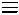
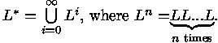
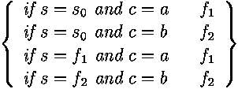
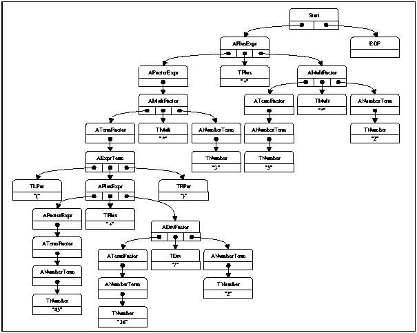
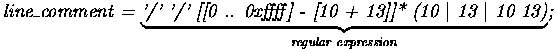
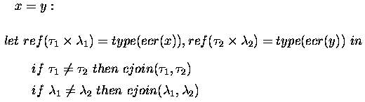

SABLECC, AN OBJECT-ORIENTED COMPILER FRAMEWORK
by Étienne Gagnon
School of Computer Science
McGill University, Montreal
March 1998
A thesis submitted to the Faculty of Graduate Studies and Research in partial fulfillment of the requirements for the degree of Master of Science
Copyright © 1997,1998 by Étienne Gagnon
i Page ii iii
Abstract
In this thesis, we introduce SableCC, an object-oriented framework that generates compilers (and interpreters) in the Java programming language. This framework is based on two fundamental design decisions. Firstly, the framework uses object-oriented techniques to automatically build a strictly-typed abstract syntax tree that matches the grammar of the compiled language and simplifies debugging. Secondly, the framework generates tree-walker classes using an extended version of the visitor design pattern which enables the implementation of actions on the nodes of the ab- stract syntax tree using inheritance. These two design decisions lead to a tool that supports a shorter development cycle for constructing compilers.
To demonstrate the simplicity of the framework, we discuss the implementation of a state-of-the-art almost linear time points-to analysis. We also provide a brief description of other systems that have been implemented using the SableCC tool.
We conclude that the use of object-oriented techniques significantly reduces the length of the programmer written code, can shorten the development time and finally, makes the code easier to read and maintain.
ii Page iii iv
Résumé
Dans cette thèse, nous présentons SableCC, unenvironnement orienté-objet qui sert à construire des compilateurs et des interpréteurs dans le langage de programmation Java. Deux décisions fondamentales forment les assises de cet environnement. En premier lieux, l'utilisation de techniques orientées-objet sert à construire un arbre syntaxique strictement typé qui est conforme à la syntaxe du langage compilé etqui simplifie le déverminage des programmes. En second lieux, l'environnement génère des classes qui traversent l'arbre syntaxique. Ces classes utilisent une version amendée du modèle de conception orienté-objet "le visiteur". Ceci permet d'ajouter des actions à exécuter sur les noeuds de l'arbre syntaxique en utilisant les techniques d'héritage objet. Ces deux décisions font de SableCC un outil qui permet d'abréger le cycle de programmation du développement d'un compilateur.
Pour démontrer la simplicité de SableCC, nous expliquons les étapes de program- mation d'une analyse à la fine pointe des techniques de compilation appelée "analyse de pointeurs en temps presque linéaire". De plus, nous décrivons brièvement d'autres systèmes qui ont Été bâtis avec SableCC.
Nous concluons que l'utilisation de techniques orientées-objet permet de réduire substantiellement la quantité du code écrit par le programmeur tout en écourtant possiblement le temps de développement. Le code s'en trouve plus lisible et facile à maintenir.
iii Page iv v
Acknowledgments
I cannot thank enough Professor Laurie Hendren, for her technical and financial support throughout the course of my study at McGill University. She was always there to listen and help. THANKS Laurie.
I would like to thanks the students of the fall 1997 edition of the CS-308-621A course that used SableCC and gave me the essential feedback to improve SableCC. Specially, I would like to thank Amar Goudjil for implementing his course project using SableCC, and for all the long discussions that led to many changes in the de- sign of SableCC. I would like to also thank the students of the winter 1998 edition of the CS-308-521B course. More specially, Iam thankful to Dmitri Pasyutin, Mon- ica Potlog, Navindra Umanee, Vijay Sundaresan, Youhua Chen and Xiaobo Fan for implementing their object-oriented compiler for the WIG (Web Interface Generator) language using SableCC. Iwould like to thank them for their help finding and fixing a few discrepancies in SableCC and testing the framework.
I would like to say a special thank to the Sable Research Group members who made a friendly environment to work together, in particular, Raja Vallee-Rai, Fady Habra, Laleh Tajrobehkar, Vijay Sundaresan and Chrislain Razafimahefa. I would like to thank also Zhu Yingchun, Rakesh Ghyia and the unforgettable Christopher Lapkowski of the ACAPS Research Group.
Further, I would like to thank my wife Gladys Iodio for her incredible patience and her support in the long hours spent writing this thesis. Without her constant presence, this thesis would not be.
iv Page v vi
v Page vi vii
Contents
Abstract ii Résumé iii Acknowledgments iv 1 Introduction 1 1.1 Related Work . . . . . . . . . . . . . . . . . . . . . . . . . . . . . . . 2 1.1.1 Lex/YACC . . . . . . . . . . . . . . . . . . . . . . . . . . . . . . 3 1.1.2 PCCTS . . . . . . . . . . . . . . . . . . . . . . . . . . . . . . . . 6 1.2 Thesis Contribution . . . . . . . . . . . . . . . . . . . . . . . . . . . . 11 1.3 Thesis Organization . . . . . . . . . . . . . . . . . . . . . . . . . . . . 122 Background 13 2.1 Regular Expressions and Deterministic Finite Automata (DFA) . . . . . . . . 13 2.2 Grammars . . . . . . . . . . . . . . . . . . . . . . . . . . . . . . . . . 17 2.3 The Java Type System . . . . . . . . . . . . . . . . . . . . . . . . . . . 18
3 SableCC 21 3.1 Introduction to SableCC . . . . . . . . . . . . . . . . . . . . . . . . . . 21 3.2 General Steps to Build a Compiler Using SableCC . . . . . . . . . . . . . . 22 3.3 SableCC Specification Files . . . . . . . . . . . . . . . . . . . . . . . . 23
vi Page vii viii
3.4 SableCC Generated Files . . . . . . . . . . . . . . . . . . . . . . . . . . 24 3.5 Compiler Development Cycle . . . . . . . . . . . . . . . . . . . . . . . . 24 3.6 Example . . . . . . . . . . . . . . . . . . . . . . . . . . . . . . . . . . 254 Lexer 31 4.1 Package Declaration . . . . . . . . . . . . . . . . . . . . . . . . . . . . 31 4.2 Characters and Character Sets . . . . . . . . . . . . . . . . . . . . . . . 32 4.3 Regular Expressions, Helpers and Tokens . . . . . . . . . . . . . . . . . . 33 4.4 States . . . . . . . . . . . . . . . . . . . . . . . . . . . . . . . . . . 35 4.5 The Lexer Class . . . . . . . . . . . . . . . . . . . . . . . . . . . . . . 36 4.6 Example Lexer . . . . . . . . . . . . . . . . . . . . . . . . . . . . . . . 37 4.7 Summary . . . . . . . . . . . . . . . . . . . . . . . . . . . . . . . . . . 40
5 Parser 41 5.1 Package and Tokens . . . . . . . . . . . . . . . . . . . . . . . . . . . . 41 5.2 Ignored Tokens . . . . . . . . . . . . . . . . . . . . . . . . . . . . . . 42 5.3 Productions . . . . . . . . . . . . . . . . . . . . . . . . . . . . . . . . 43 5.4 Implementation Details . . . . . . . . . . . . . . . . . . . . . . . . . . 48 5.5 The Parser Class . . . . . . . . . . . . . . . . . . . . . . . . . . . . . 49 5.6 Customized Parsers . . . . . . . . . . . . . . . . . . . . . . . . . . . . 50 5.7 Summary . . . . . . . . . . . . . . . . . . . . . . . . . . . . . . . . . . 51
6 Framework 52 6.1 The Visitor Design Pattern Revisited . . . . . . . . . . . . . . . . . . . 52 6.2 Extending the Visitor Design Pattern . . . . . . . . . . . . . . . . . . . 56 6.3 SableCC and Visitors . . . . . . . . . . . . . . . . . . . . . . . . . . . 57 6.4 AST Walkers . . . . . . . . . . . . . . . . . . . . . . . . . . . . . . . . 58 6.5 Additional Features . . . . . . . . . . . . . . . . . . . . . . . . . . . . 61 6.6 Summary . . . . . . . . . . . . . . . . . . . . . . . . . . . . . . . . . . 62
vii Page viii ix
7 Case Studies 63 7.1 SableCC with SableCC . . . . . . . . . . . . . . . . . . . . . . . . . . . 63 7.2 Code profiling . . . . . . . . . . . . . . . . . . . . . . . . . . . . . . 64 7.3 A JavaFront End . . . . . . . . . . . . . . . . . . . . . . . . . . . . . . 66 7.4 Fast Points-to Analysis of SIMPLE C Programs . . . . . . . . . . . . . . . 67 7.5 A Framework for Storing and Retrieving Analysis Information . . . . . . . . 728 Conclusion and Future Work 74 8.1 Summary and Conclusions . . . . . . . . . . . . . . . . . . . . . . . . . . 74 8.2 Future work . . . . . . . . . . . . . . . . . . . . . . . . . . . . . . . . 75
A SableCC Online Resources 76 B SableCC 2.0 Grammar 77 C Simple C Grammar 83 D Customized Parser 94
viii Page ix x
List of Figures
1.1 A small LL(1) grammar and its parsing functions . . . . . . . . . . . . . . 7 2.1 Graphical DFA accepting a+ |b+ . . . . . . . . . . . . . . . . . . . . . . . 16 2.2 Another notation for DFA accepting a+ |b+ . . . . . . . . . . . . . . . . . 16 3.1 Steps to create a compiler using SableCC . . . . . . . . . . . . . . . . . 23 3.2 Traditional versus SableCC actions debugging cycle . . . . . . . . . . . . 25 3.3 postfix.grammar . . . . . . . . . . . . . . . . . . . . . . . . . . . . . . 26 3.4 SableCC execution on Windows 95 . . . . . . . . . . . . . . . . . . . . . . 27 3.5 postfixnTranslation.java . . . . . . . . . . . . . . . . . . . . . . . . . 28 3.6 postfixnCompiler.java . . . . . . . . . . . . . . . . . . . . . . . . . . . 29 3.7 Compiling and executing the Syntax Translation program . . . . . . . . . . 30 3.8 Typed AST of expression (45 + 36/2) * 3 + 5 * 2 . . . . . . . . . . . . . . 30 7.1 Framework for storing and retrieving analysis information . . . . . . . . . 73
ix Page x 1
List of Tables
2.1 Operations on languages . . . . . . . . . . . . . . . . . . . . . . . . . . 14 6.1 Methods available on all nodes . . . . . . . . . . . . . . . . . . . . . . 62
x Page 1 2
Chapter 1
Introduction
The number of computer languages in use today is overwhelming. Ranging from general purpose to highly specialized, they are present in almost all areas of computing. There are mainstream programming languages like C, Fortran, Pascal, but also many other languages used in domain-specific applications. Computer languages can be used to describe many things, other than computer processing. For example, HTML[W3C97] or TeX[Knu84] are used to describe formatted documents. A domain-specific languages like HL7[ANS97] is used to exchange health care information uniformly across the world. It would impossible to list all the uses here, but it is worth noting that these languages are often embedded in larger applications. For example, many word processing applications have their own small macro or scripting language to allow the automation of commands.
In the 1950's, writing a compiler was very diffcult. It took 18 staff-years to implement the first FORTRAN compiler[BBB + 57]. Since then, advances in the theory of compilers and the development of many compiler tools have simplified this task greatly. Writing a compiler is now a feasible task for any programmer with minimal knowledge of compiler techniques. This simplicity isachieved due to the use of compiler compilers. A compiler compiler is a program that translates a specification into a compiler for the programming language described in the specification. This relieves the programmer from the burden of writing the lexical and syntactical analysis code.
Over the years, many compiler compilers have been developed. The scope of these tools varies. While some will build a complete compiler (end-to-end), others will only build the front-end of a compiler (lexer and/or parser). It may seem, at first glance, that an end-to-end compiler compiler will be more powerful. However, in practice, front-end compiler compilers are normally integrated with a general purpose
1 Page 2 3
programming language. This way, the implementation of complex data structures, optimizations or code analyses is easier because it is done in the programmer's native programming language. Front-end compiler compilers exist for almost all major programming languages in use today.
In the last few years, the JavaTM programming language[GJS96], developed and trademarked by Sun Microsystems inc., has gained a remarkable popularity on the Internet. Although superficially Java has a syntax similar to C++, Java also has many additional features of modern high-level object-oriented programming languages. For example, Java has a garbage collector, a cleaner inheritance mechanism with classes and interfaces, and a rich standard cross-platform library with support for graphical user interfaces and network programming. One of the most interesting properties of Java is the portability of object code. Java source files are compiled to platform independent ByteCode instructions[LF97]. At runtime, these ByteCodes are interpreted by a Java Virtual Machine[LF97] to perform the actual computation.
It is no surprise that existing compiler compilers have been ported to Java. For example CUP[Hud97] is a Java version of YACC and ANTLR[Ins97] is a Java version of PCCTS. But, because these tools were designed with a different target language in mind, they fail to take advantage of many new features of Java.
The topic of this thesis is SableCC, a new compiler compiler for Java. SableCC sits in the middle between front-end and end-to-end compiler compilers. It not only generates a lexer and a parser, but it also builds a complete set of Java classes.
In the following sections we will discuss related work, then we will state the contributions of this thesis. Finally, we will outline the general organization of the remaining chapters of the thesis.
1.1 Related Work
The most widely used compiler compilers today fall into two main families: Lex[Les75] / YACC[Joh75] and PCCTS[Par97]. Keeping in mind that many compilers are written by normal programmers to compile mini-languages, we discover that while many languages like LISP, ML and other languages are sometime used as the accompanying general purpose programming language, the most used languages are C, C++ and more recently Java. C is probably most used because of its undeniable popularity. This popularity is due to its relative simplicity and mostly, its speed performance. C is fast because it has been designed as a portable intermediate-level programming language for implementing the Unix operating system. C++ follows, having gained
2 Page 3 4
most of its popularity from its complete backward compatibility to the C language. C++ adds object-oriented elements to the C language.
Object-oriented programming has the advantage of simplifying the maintenance of a compiler over time. The interest in building compilers in the Java language lies in its platform independence, its robustness from a software engineering point of view and its popularity among defectors from C++. Java is sometimes called "C plus plus minus minus" because it lacks many undesirable features of C and C++ like pointer arithmetic.
In the following subsections, we study both tool families and look at their most popular Java implementations.
1.1.1 Lex/YACC
Lex[Les75] and YACC[Joh75] (Yet Another Compiler Compiler) are a pair of tools that can be used together to generate a compiler or its front-end. Many variations on these tools are in use today. Among the most popular versions are the Open Software Foundation's GNU system Flex and Bison tools. These tools use the C language to specify the action code. (We use the term actions to refer to the code written by a programmer to be executed at specific points of a lexer and/or parser execution).Lex is normally used to partition a stream of characters into tokens. It takes as input a specification that associates regular expressions with actions. From this specification, Lex builds a function implementing a deterministic finite automaton (DFA) that recognizes regular expressions in linear time. At runtime, when a regular expression is matched, its associated action is executed.
YACC is a parser generator. Like lex, YACC reads a specification that contains both the grammar of the compiled language and actions associated with each alter- native of a production of the grammar. It then generates a parser that will execute the action code associated with each alternative as soon as discovered. YACC gener- ates LALR(1) parsers, and has a few options to deal with ambiguous grammars and operator precedence.
The combination of Lex/YACC allows a programmer to write a complete one pass compiler by simply writing two specifications: one for Lex and one for YACC.
A version of Lex has been ported to Java. It is called JLex[Ber97]. It has been developed by Elliot Joel Berk, a student of the Department of Computer Science, Princeton University. It is quite similar in functionality to Flex.
3 Page 4 5
A Java version of YACC is called CUP[Hud97] (Constructor of Useful Parsers). It has been developed by Scott E. Hudson, Graphics Visualization and Usability Center, Georgia Institute of Technology. It is very similar to YACC, but actions are written in the Java language.
We now list the advantages and drawbacks of using the JLex/CUP pair of tools to build compilers.
Advantages
- JLex DFA based lexers are usually faster than hand written lexers.
- JLex supports macros to simplify the specification of
complex regular
expressions.
- JLex supports lexer states, a popular feature found
in GNU FLEX.
- CUP generates LALR(1) parsers and can deal with some
ambiguous grammars
using options to resolve LALR conflicts.
- The set of languages that can be recognized by an LALR(1)
parser is a superset of
LL(k) languages. In addition, LALR(1) grammars can be left recursive
whereas
LL(k) grammars can't.
- LALR(1) parsers are usually faster than equivalent PCCTS
LL(k) parsers for
the same language, because PCCTS uses costly syntactic predicates to
resolve
parsing con icts.
- Both JLex and CUP are available in source code form.
Drawbacks
- JLex supports only 8 bits characters. But, Java has adopted 16 bits
Unicode
characters as its native character set. JLex has a %unicode
directive, but it is
not yet implemented.
- JLex still has known bugs in presence of complex macros.
- JLex macros are treated much like C macros. This means that they are textually replaced in regular expressions. This can lead to very hard to find bugs similar to those found in C in presence of unparenthesized macros1.
-----------------------------
1If a macro M is defined as a|b , then the regular expression aMb will be interpreted as aa|bb  (aa)|(bb), not a(a|b)b as intended.
4 Page 5 6
- JLex and CUP have not been specially designed to work together. So,
it is the
programmer's job to build the links between the code generated by both
tools.
JLex has %cup directive, but it has no effect.
- CUP options for handling ambiguous grammars can be quite
dangerous in the
hand of a novice, because it is hard to clearly determine the recognized
grammar.
- Action code embedded in CUP parsers can be quite
diffcult to debug. The
abstraction required to clearly understand the operation of a
table-based LALR
parser is the source of this diffculty for casual users of CUP.
- With today's low memory prices and faster processors, many
programmers prefer
to work on an Abstract Syntax Tree (AST) representation of parsed
programs.
CUP offers no support for building ASTs. So, the programmer has to write
the
appropriate action code to build nodes for every production alternative
of the
grammar.
- The lack of support for ASTs renders CUP ill suited for
multiple pass compilers.
- The fact that actions are embedded in the specification is
a big software en-
gineering problem. It means that resulting specifications are often
enormous.
Since CUP does not allow the specification to be broken into multiple
files, the
specification may result in one huge file. Furthermore, the duplication
of action
code in the specification and in the resulting program is quite bad. It
leaves
to the programmer the responsibility of keeping the specification and
resulting
program consistent. So safely debugging JLex/CUP action code involves
the
following tedious cycle:
Repeat
- Writing or modifying action code in the specification file.
- Compiling the specification.
- Compiling the resulting code.
- Executing the resulting program to find errors.
- Locating the errors in the program.
- Looking back in the specification for the related erroneous action code.
Until success
- Taking a shortcut in the previous cycle by fixing errors directly in the generated program can result in unsynchronized specification and working code, if the programmer does not take the time to update the specification accordingly. This
5 Page 6 7
is most likely to happen when a programmer debugs actions in an Integrated Development Environment.
1.1.2 PCCTS
PCCTS[Par97] stands for Purdue Compiler Construction Tool Set. It has been devel- oped mainly by Terence Parr. Originally, PCCTS was written in the C++ language to generate compilers written in C++. Lately, PCCTS 1.33 has been ported to Java and renamed ANTLR2.xx[Ins97].ANTLR 2.xx is a single tool combining together all three parts of PCCTS. PCCTS 1.33 consisted of:
- ANTLR (ANother Tool for Language Recognition),
- DLG (DFA-based Lexical analyzer Generator) and
- SORCERER, a tool for generating tree parsers and tree transformers
A very similar tool has been developed in parallel by Sun Microsystems inc., called JavaCC. There are no major differences between the two products but for the copy- right and source code availability. While ANTLR is in the public domain, JavaCC is a commercial product, not available in source code format.
PCCTS has been developed in reaction to the complexity of using Lex/YACC to resolve compilation problems. Mainly, the table based bottom-up parsing of YACC resulted in very hard to debug compilers. Instead, PCCTS builds LL(k) recursive-descent parsers. An LL(1) recursive-descent parser is constituted of a set of functions called recursively to parse the input. Each function is responsible for a single pro- duction. The function gets a token from the lexer and determines the appropriate alternative based on it. This very intuitive approach was used to build early LL(1) one pass Pascal compilers. Today, some programmers still code LL(1) recursive-descent parser by hand, without the help of compiler compilers. Figure 1.1 shows a small LL(1) grammar and the recursive functions used to parse it. The problem is that LL(1) grammars are very restrictive. Many common programming constructs are not easily written as an LL(1) grammar. The most common problems are:
- LL(1) grammars require two alternatives of a production to be distinguishable by looking only at the next available token. This means that the following grammar is not allowed: A = aA|a.
6 Page 7 8
The grammar: |
Figure 1.1: A small LL(1) grammar and its parsing functions
7 Page 8 9
-
2. LL(1) grammars cannot be left recursive. So, this is not allowed: A =
Aaja.
A semantic predicate specifies a condition that must be met (at run-time) before parsing may proceed. In the following example, we use a semantic predicate to dis- tinguish between a variable declaration and an assignment alternative, using PCCTS syntax:
statement:
{isTypeName(LT(1))}? ID ID ";" | // declaration "type varName;"
ID "=" expr ";"; // assignment
The parsing logic generated by PCCTS for this example is:
if(LA(1)==ID && isTypeName(LT(1)))
{
match alternative one
}
else if (LA(1)==ID)
{
match alternative two
}
else error
This example showed us how one can in uence the parsing process with semantic information using sematic predicates.
Syntactic predicates are used in cases where finite LL(k) for k>1 is insuffcient to disambiguate two alternatives of a production. A syntactic predicate executes the parsing function calls of the predicate, but it does not execute any action code. If the predicate succeeds, then the alternative is chosen and the parsing calls of the alternative are executed along with action code. If the predicate fails, the next matching alternative (or predicate) is executed.
One of the most popular features of PCCTS is its directive to build abstract syntax trees (AST) automatically. The resulting AST has a single Java node type shared by
-----------------------------
2EBNF is BNF augmented with the regular expression operators: (), *, ? and +.
8 Page 9 10
all the nodes. One gets specific information about the parsing type of the nodes by calling methods on the node. Additionally, PCCTS allows for building tree-parsers. A tree-parser is a parser that scans the AST for patterns. If it finds a specified pattern, it executes the action code associated with the pattern. A tree-parser is very similar in its specification and implementation to normal parser. It uses the same LL(k) EBNF and predicates as normal parsers and it is built using recursive functions.
We will now list the advantages and drawbacks of using the Java versions of PCCTS (ANTLR2.xx and JavaCC) when building compilers.
Advantages
- Both tools have a tight integration of the lexer and the parser.
- JavaCC DFA-based lexers accept 16 bits Unicode characters.
- ANTLR lexers are LL(k)-based (with predicates) and share
the same syntax as
parsers.
- Action code is much easier to debug with ANTLR and JavaCC
than with
LALR(1) table-based parsers, due to the natural behavior of
recursive-descent
parsers.
- Both tools support EBNF.
- Both tools have options to generate ASTs automatically.
- Both tools support recursive-descent tree-parsers.
- The support for ASTs is very convenient for multiple-pass
compilers.
- The range of languages that can be parsed by these tools
is much bigger than
LL(1), and is relatively comparable to LALR(1). The use of semantic
predicates
enables the parsing of context-sensitive grammars.
- Both tools are free. Additionally, ANTLR is provided in
source code form and
is in the public domain.
- Both tools are relatively well supported, with dedicated newsgroups on the Internet.
9 Page 10 11
Drawbacks
- ANTLR lexers do not support 16 bits Unicode character input.
- The exibility of predicates comes with a very high cost in
performance if used
poorly by a programmer.
- While semantic predicates allow the parsing context-sensitive
grammars, they
also are a software engineering problem. Semantic verifications must
happen
along with parsing in order to enable semantic predicates. Furthermore,
the
predicates are somehow anintegral part of the resulting grammar. This
obscures
the grammar.
- Syntactic predicates are very expensive in computation
time.
- A majority of predicate uses would not be needed by an
LALR(1) parser to
recognize the same grammar.
- LL(k) grammars cannot be left recursive. This handicap can
be fixed by widely
know grammar transformations and the use of EBNF syntax. A = Aa|a => A
=
(a)+.
- ANTLR/JavaCC specifications suffer from the same important
software
engineering problems as JLex/CUP. They tend to become huge, and
debugging
action code involves the same tedious cycle.
- As with JLex/CUP, the responsibility ofkeeping the
specification and the
generated code synchronized is left to the programmer. So taking a
shortcut in the
debugging cycle by fixing errors in the program directly can result in
unsynchronized specification and working code. This is most likely to
happen when
debugging semantic predicates in an Integrated Development Environment.
- The integrity and the correctness of the AST is left in the hands of the programmer. There will be no warning if a transformation on the AST results in a degenerate tree. Such bugs are extremely diffcult to track, because they may result in a null pointer exception, or some other error condition in unrelated code thousands of instructions after the transformation occurred. This is comparable to C and C++ array out of bound problems.
10 Page 11 12
1.2 Thesis Contribution
This thesis reports on SableCC, a new compiler framework for building compilers in the Java programming language. SableCC uses design patterns and takes advantage of the Java type system to deliver highly modular, abstract syntax tree (AST) based, object-oriented compilers.Our approach differs from other approaches in that SableCC specification files don't contain any action code. Instead, SableCC generates an object-oriented framework in which actions can be added by simply defining new classes containing the action code. This leads to a tool that supports a shorter development cycle.
SableCC generated ASTs are strictly-typed. This means that the AST is self preserving, preventing any corruption from occurring in it. This contrasts with ANTLR (and JavaCC) generated ASTs where the integrity of the AST is left in the hands of the programmer.
In summary, the main contributions of this thesis are:
- The design of a new approach to build easy to maintain, AST based,
object-oriented compilers in the Java language.
- The use of object-oriented techniques to clearly separate
machine-generated code
and human-written code. This simplifies the maintenance of a compiler
and leads
to a shorter development cycle.
- The introduction of an extended visitor design pattern
that supports evolving
structures. This simplifies the addition of custom node types in the
AST, without
modifying existing classes.
- The implementation of SableCC, an object-oriented
compiler framework.
SableCC consist of:
- A deterministic finite automaton (DFA) based lexer generator.
- An LALR(1) parser and AST builder generator.
- An object-oriented AST framework generator.
- A deterministic finite automaton (DFA) based lexer generator.
- The implementation of the front-end of a compiler for the
Java programming
language using SableCC.
- The implementation of a SIMPLE C compiler front-end and a state-of-the-art points-to analysis for SIMPLE C programs, as a proof of concept on the simplicity of using SableCC.
11 Page 12 13
- The public release of the SableCC software along with examples on the Internet. SableCC is available, free of charges, from the web site http://www.sable.mcgill.ca/SableCC/. A discussion mailing-list is also provided3.
1.3 Thesis Organization
Chapter 2 provides the required background to read this thesis. Chapter 3 presents an overview of the SableCC compiler compiler along with a complete example. Chapter 4 describes in details the lexing portion of SableCC. Chapter 5 describes the grammat- ical specifications of SableCC and discusses their relation with the generated AST. Chapter 6 details SableCC generated frameworks and discusses the techniques to make most effcient use of the framework. Chapter 7 details a few case studies, and chapter 8 presents our conclusions and points out directions for future work.-----------------------------
3See Appendix 8.2 for details.
12 Page 13 14
Chapter 2
Background
This chapter presents some basic compiler notions that will be required in the following chapters. These notions are normally acquired in undergraduate compiler courses, so we will be brief. This chapter also presents an introduction to the Java type system which provides the background required to understand the robustness of the typed ASTs created by SableCC.
2.1 Regular Expressions and Deterministic Finite Automata (DFA)
Regular Expressions and Deterministic Finite Automata (DFA) are used to specify and implement lexers. Before going further, we state a few definitions.
Definition 1 : A string s over an alphabet is a finite sequence of symbols drawn from that alphabet. The length of a string s is the number of symbols in s. The empty string, denoted , is a special string of length zero.
Definition 2 : A language L over alphabet is a set of strings over this alphabet.1
In less formal terms, a string is a sequence of characters and a language is just a set of strings. Table 2.1 defines the union, concatenation and Kleene closure operations on languages. These operations will be useful in the definition of regular expressions that follows.
-----------------------------
1The empty set and the set { } that contains only the empty string are languages under this definition.
13 Page 14 15
| Operation | Definition |
|---|---|
| union (L M) | L M = {s | s is in L or s is in M} |
| concatenation (LM) | LM = {st | s is in L and t is in M} |
| Kleene closure (L*) |  |
Table 2.1: Operations on languages
Definition 3 : Here are the rules that define a regular expression over alphabet :
-
1. is a
regular expression that denotes the language {}, the set
containing the
empty string.
2. If c is a symbol in , then c is a regular expression that denotes the language {c}, the set containing the string c (a string of length one).
3. If r and s are regular expressions denoting the languages L(r) and L(s) respectively, then:
-
(a) (r) is a regular expression denoting the language L(r).
(b) (r)|(s) is a regular expression denoting the language L(r) L(s).
(c) (r)(s) is a regular expression denoting the language L(r)L(s).
(d) (r)* is a regular expression denoting the language (L(r))* .
In practice, a few additional rules are added to simplify regular expression notation. First, precedence is given to operators. The * operator gets the highest precedence, then concatenation then union. This avoids unnecessary parentheses. Second, two additional operators are added: + and ?, where r+ = rr* and r? = r|. These new operators get the same precedence as the * operator.
Here are some examples of regular expressions and the language they denote.
Example 1 : a* = {, a, aa, aaa, ...}
Example 2 : a+ aa* = {a, aa, aaa, ...}
Example 3 : a?b ab|b = {ab, b}
Example 4 : (a|)(a|) = {aa, ab, ba, bb}
14 Page 15 16
Example 5 : a|a*b a|(a*b) = {a, b, ab, aab, aaab, aaaab, ...}
Let's look, now, at deterministic finite automata. First we state a definition.
Definition 4 : A deterministic finite automaton is a mathematical model that consists of:
- A set of states S.
- A set of input symbols .
- A transition function move that maps state-symbol pairs to a state.
- A state s0 that is called the initial state.
- A set of states F called final states.
A DFA accepts (or recognizes) an input string s = c1c2...cn if and only if sn exists2 and is a final state, where si+1 = move(si, ci+1), starting with state s0. Here are some DFAs and their recognized languages.
Example 6 :
-
1. S = {s0, f1, f2}
2. = {a,b}
| 3. move(s,c) = |  |
4. initial state = s0
5. final states = {f1,f2}
This DFA recognizes the language {a,b,aa,bb,aaa,bbb,aaaa,bbbb,...}. It is worth noting that it is the same language as the language recognized by the regular expression a+|b+ . Figures 2.1 and 2.2 show two other representations for this DFA.
-----------------------------
2Note that move does not have to map every state-symbol pair to a state. For example, the empty transition function is a valid transition function.
15 Page 16 17
Figure 2.1: Graphical DFA accepting a+|+.
|
start = {s0}
final = {f1,f2} a:(s0 -> f1),(f1 -> f1) b:(s0 -> f2),(f2 -> f2) |
Figure 2.2: Another notation for DFA accepting a+|+.
Regular expressions and DFAs are proven to be equivalent[HU79], in the sense that for every regular expression there exists a deterministic finite automaton that recognizes the same language, and for every deterministic finite automaton there exists a regular expression that recognizes the same language.
On the practical side, however, regular expressions are much easier to use by humans to specify recognizable forms, while DFAs are easily implemented in tables to recognize a language in linear time in the size of the input stream. So, usually, a lexer generator reads token definitions in regular expression form and generates a lexer based on the equivalent DFAs.
16 Page 17 18
2.2 Grammars
The syntactic structure of a programming language is usually expressed using a context-free grammar (or simply grammar), commonly called Backus-Naur Form3 (BNF). Figure 1.1 contained an example of a very simple grammar. Here is a formal definition for context-free grammars.Definition 5 : A context-free grammar or Backus-Naur Form (BNF) is a quadruple G = (VN,VT,P,S) where VT is a set of tokens called terminals, VN is a set of nonterminals, P VN x(VN VT)* is a set of productions where each production consists of a nonterminal called left-hand side and a sequence of nonterminals and/or terminals called right-hand side, and S VN is the start symbol.
As a notational shortcut, productions with the same left-hand side are normally grouped together and a "|" is used to separate right-hand sides.
Certain classes of grammar can be parsed effciently. Specifically, LL(1) and LR(1) grammars can be parsed in linear time in the size of the AST. It is worth noting that ANTLR/JavaCC implementation of LL(k) grammars are not linear in the size of the AST. LL parsers are called top-down parsers, and LR parsers are called bottom-up parsers.
LALR(1) grammars are a subset of LR(1) grammars that can be implemented using a more compact representation of parsing tables. Most modern programming constructs can be expressed easily using LALR(1) grammars. In diffcult cases, a slight relaxation of the grammar rules (by making the grammar accept a larger language including some invalid input) resolves LALR(1) conflicts. Invalid constructs are eliminate at later stages of the compilation process.
Example 7 : The following grammar is not LALR(1):
-
A = Bde|Cdf
B = b|c
C = c
To see the problem, we look at the input: c df (the dot represents the current parsing location). The problem is that with one character lookahead, the parser cannot determine if the input is: B d::: or C d:::. This can be easily resolved by eliminating production C which is a subset of production B.
-----------------------------
3Sometimes called Backus normal form
17 Page 18 19
-
A = Bde|df
B = b|c
This will accept some invalid strings like bdf. Such strings can be eliminated after the parsing process.
LL(1) grammars, on the other hand, are a very small subset of LR(1) grammars. It is often diffcult to express some common programming constructs using LL(1) grammars. For example, the grammar E = E + n|n that represents left-associative expressions is not LL(1).
There is an additional notation called Extended BNF (EBNF). This is simply the BNF notation extended with regular expression operators {(),*,+,?}. So instead of writing P = ab|, using EBNF we can write P = (ab)?.
2.3 The Java Type System
In this section, we discuss the most important features of the Java type system for this thesis. The type system of Java is relatively complex but simpler and safer than C++.Java, like many other object oriented languages, makes a clear distinction between the declared type of a variable and the actual type of the value held into that variable. There are two families of types for declaring variables, specifically: basic types and reference types.
Basic types are predefined and cannot be redefined. They include int, long, char, boolean, float, etc. Variables and fields declared of a basic type can only contain values of this exact type.
Reference types can be user defined. They fall into two categories, classes and interfaces. (Arrays are a special kind of classes). All classes share a common ancestor, the Object class. Classes and interfaces differ in the following terms:
- Interfaces support multiple inheritance. An interface is said to
extend other
interfaces.
- Interfaces contain only method prototypes and constants
(final static fields).
- Classes support single inheritance only, but can implement multiple interfaces. A Class is said to extend another class.
18 Page 19 20
- Classes can define methods and fields.
An interface can be viewed as a contract to define some methods. A class that implements an interface signals its intention of assuming the terms of this contract. The Java compiler and runtime environments insure that such contracts are respected.
When a variable is declared of a reference type, it can be assigned, at compile time, only values that are either:
- declared as this same reference type,
- declared as a derived reference type.
A type cast can be used to bypass these rigid rules, but the compiler will issue an error if it can prove that such a cast would always be invalid at runtime.
This leads us to the dynamic type checking of Java. At runtime, Java performs dynamic type checking to insure that all variables of reference type are assigned values whose type is either (1) the declared type of the variable or (2) a derived type. This contrasts with the compile time type checking in that it is the actual type of the value, not its declared type, that is checked.
It is important to see that the dynamic type checking is what makes the Java type system very robust. It is not possible, at runtime, to bypass the type system, even though it is possible to fool the compiler at compile time using type casts.
Example 8 : The following method will be compile but, at run time, a ClassCastEx- ception will be generated by the Java runtime system:
void foo()
{ Object a = new Integer(5);
Vector b = (Vector) a;} // Exception at runtime!
Variables of reference type hold a reference (a pointer) to the actual value, not the value itself. Method parameters of reference type are passed a copy of the reference, not a copy of the value. A value of class type is called an instance, or commonly an object. All instances are explicitly created with the new operator and there are no hidden copies. All objects are allocated on the heap by the Java runtime system. They are garbage-collected automatically when they are no longer in use. Java offers no free operator, preventing any corruption due to the unintended use of freed objects, as can happen with C++.
19 Page 20 21
Java has four different scopes for the visibility of definitions. public, protected, package (or default) and private. Public definitions are visible to all classes. Protected definitions are visible to derived classes and to classes of the same package. When no scope is specified, it is assumed that a definition has package scope, that is, it is visible to all classes of the same package. Private definitions are visible only to the class itself. Informally, a package is a collection of classes defined in the same directory. They alleviate the need for the notion of friends, as found in other object-oriented languages.
Version 1.1 of Java has introduced the notion of inner classes and anonymous classes. An inner class is a class defined in the scope of an enclosing class. An anonymous class, much like anonymous functions in ML, can be defined in expressions. SableCC uses both inner classes and anonymous classes.
A complete description of the Java type system can be found in the Java Language Specification[GJS96].
20 Page 21 22
Chapter 3
SableCC
In this chapter, we introduce the SableCC compiler compiler. After a brief introduction, we list the steps required to build a compiler using SableCC. Then, we discuss the SableCC specification file and give an overview of the files that are generated. We explain the impact of SableCC on the development cycle, and finally, weshow a complete example of a very simple compiler generated with SableCC.This chapter serves mainly as an introduction to subsequent chapters. Its purpose is to give a general idea of how SableCC is used.
3.1 Introduction to SableCC
SableCC represents the result of our research to develop a Java compiler compiler that meets new compiler implementation trends. More specifically:
- Modern compilers usually implement many passes over the compiled
program.
One pass compilers (like early PASCAL compilers) are seldom used
anymore.
- Many compilers work on AST (Abstract Syntax Tree)
representation of programs.
- As a compiler evolves over time, new analyses and
optimizations are added to
the compiler.
- A compiler, like any other software, must be maintainable.
To address these issues we have developed a new approach for compiler compiler tools. In our approach, the compiler compiler place in the development cycle has
21 Page 22 23
been reduced to merely build an initial object-oriented framework that is based solely on the lexical and grammatical definition of the compiled language. This has the advantage of limiting framework modifications to the case where the grammar of the compiled language is changed.
On the other hand, the richness of the generated environment has been increased. So, in the generated framework:
- The parser automatically builds the AST of the compiled program.
- Each AST node is strictly typed, ensuring no corruption
occurs in the tree.
- Each analysis is written in its own class. Writing a new
analysis requires only
extending some tree walker class and providing methods to do the work at
appropriate nodes.
- Storage of analysis information is kept in the analysis class itself, outside the definition of node types. This ensures no modification to a nodetype is needed when a new analysis is added to or removed from the compiler.
The framework makes extensive use of object-oriented design patterns to achieve modularity of code. The resulting compiler becomes a very maintainable compiler. In some cases we have opted for good object-oriented design over fast code. It is our belief that over time, new processors get faster and memory gets cheaper, but the same old code base is often used to generate new compilers. So good software engineering is important in thelong term.
We have developed SableCC in the Java programming language. It runs on any platform supporting the Java Development Kit 1.1 or newer.
3.2 General Steps to Build a Compiler Using SableCC
Producing a compiler using SableCC requires the following steps (as shown in Figure 3.1):
- Creating a SableCC specification file containing the lexical
definitions and the
grammar of the language to be compiled.
- Launching SableCC on the specification file to
generate a framework.
- Creating one or more working classes, possibly inheriting from classes generated by SableCC.
22 Page 23 24
Figure 3.1: Steps to create a compiler using SableCC
- Creating a main compiler class that activates lexer, parser and
working classes.
- Compiling the compiler with a Java compiler.
By working classes we mean classes that contain the core compiler functionality. These classes can be analyses, transformations on the AST, or simply code generation classes.
We must note that SableCC, as other compiler compiler tools, can also be used to build interpreters. In such a case, a working class can be the interpreter itself.
3.3 SableCC Specification Files
A SableCC specification file is a text file that contains the lexical definitions and the grammar productions of the language to be recognized by the generated compiler framework. It also specifies a destination root Java package for generated files.Unlike other compiler compilers, there is no place to put action code associated with a token or a production. This design has the advantage of adding stability to the framework. Modifications to the framework are limited to when the grammar of the compiled language is changed. Adding, changing or even removing action code (in working classes) does not affect the generated framework in any way.
23 Page 24 25
Lexical definitions use regular expressions and the grammar is written in Backus-Naur Form (BNF).
3.4 SableCC Generated Files
On output, SableCC generates files into four sub-packages of the specified root pack- age. The packages are named: lexer, parser, node and analysis. Each file contains either a class or an interface definition.
- The lexer package contains the Lexer and LexerException classes.
These
classes are, the generated lexer and the exception thrown in case of a
lexing
error, respectively.
- The parser package contains the Parser and ParserException
classes. As
expected, these classes are the parser and the exception thrown in case
of a
parsing errors.
- The node package contains all the classes defining the
typed AST.
- The analysis package contains one interface and three classes. These classes are used mainly to define AST walkers.
3.5 Compiler Development Cycle
The choices we have made in the design of the SableCC compiler framework have a direct effect on the development cycle of a compiler.As illustrated by the left diagram of Figure 3.2, with traditional compiler compilers, the cycle involves the following steps. First, the programmer writes or fixes the grammar and action code in the specification file. Then the source code for the compiler is generated. The source code is then compiled to an executable program. The program is then tested and debugged. The problem in this cycle is that the debugging process is done using the source files generated by the compiler compiler. So, if a bug is found in this source code, the programmer has to find the corresponding code in the specification file and fix it there.
As shown by the right diagram of Figure 3.2, with SableCC, this debugging cycle is shortened. Since actions are written directly as Java classes, the source code being debugged was written by the programmer. This enables interactive debugging in an Integrated Development Environment.
24 Page 25 26
Figure 3.2: Traditional versus SableCC actions debugging cycle
3.6 Example
In this section, we will demonstrate all the steps to create a very simple syntax translator that translates arithmetic expressions into postfix form.Creating the Specification File and using SableCC
First, as illustrated in Figure 3.3, we create a new text file that we name postfix.grammar. In it we put a Package declaration specifying postfix as the destination root package for SableCC generated files.
Under the Tokens section, we add lexical definitions for numbers, arithmetic op- erators, parentheses and blanks.
In the Ignored Token section, we put blanks, to specify that blanks are ignored by the parser.
Finally, we list the productions of the grammar under the Productions section. We precede each alternative of a production with a name between curly braces.
25 Page 26 27
Package postfix; |
Productions
expr =
{factor} factor |
{plus} expr plus factor |
{minus} expr minus factor;
|
Figure 3.3: postfix.grammar
This name serves to identify a specific alternative of a production. We save the file postfix.grammar in the root directory of our project. At the shell prompt, in this directory, we issue the following command:
java SableCC postfix.grammar
Figure 3.4 shows the execution trace of SableCC. Once SableCC is finished, we can look in the postfix subdirectory. As expected, we see four subdirectories named lexer, parser, node and analysis. Further exploration in these subdirectories will reveal all the Java classes generated by SableCC.
Creating the Translation Class
To translate a normal infix notation into a postfix notation, we simply need to do a depth first traversal of the tree, print numbers as we encounter them and print operators after having visited the subtree of the production containing the operator.
The final code for the Translation class is shown in Figure 3.5. We will explain in forthcoming chapters all the details of how this class works. For the time being, we will simply give the general idea.
We define the class Translation as extending class DepthFirstAdapter. This automatically provides a depth-first traversal of the AST. To print numbers as we en- counter them, we simply define the method caseTNumber, the type name of "number" nodes being TNumber.
26 Page 27 28
C:\Java\Projects\Postfix>java SableCC postfix.grammar Verifying identifiers. Generating token classes. Generating production classes. Generating alternative classes. Generating analysis classes. Generating utility classes. Generating the lexer. -Constructing NFA. ....................... -Constructing DFA. ............ -resolving ACCEPT states. Generating the parser. .................. .................. .................. .. .................. C:\Java\Projects\Postfix> |
Figure 3.4: SableCC execution on Windows 95
The name of every alternative in Figure 3.3 is prefixed with an A and concatenated to the name of its production to produce a type name for the alternative. For example:
expr = ... | {plus} expr plus factor | ...; => APlusExpr
To print operators after the traversal of a subtree, we define the methods outAPlusExpr, outAMinusExpr, outAMultFactor, outADivFactor and outAModFactor. These methods get executed after the subtree rooted at each node of their respective type1 has been visited, in the depth first traversal of the tree.
Creating the Compiler Class As shown in Figure 3.6, we define the Compiler class as containing the main method. This will be the starting point of our program. In main, we create an instance of the lexer, reading from the standard input. We pass the lexer to the constructor of the parser. Then we parse the input. This gives us in return a reference to the root of the AST. We store it in variable tree. To apply the transformation, we simply pass a new instance of the Translation class to the apply method of tree.
-----------------------------
1The type being the name of the method without the out. So, outAPlusExpr gets executed after the subtree of a node of type APlusExpr has been visited.
27 Page 28 29
package postfix; import postfix.analysis.*; import postfix.node.*; |
Figure 3.5: postfix\Translation.java
Compiling and Running the Postfix Translator
To compile the whole program, we simply type:
javac postfixnCompiler.java
and to run the postfix translator, we type:
java postfix.Compiler
28 Page 29 30
package postfix; import postfix.parser.*; import postfix.lexer.*; import postfix.node.*; import java.io.*; |
Figure 3.6: postfix\Compiler.java
Then, we type some arithmetic expression. When we are finished, we type the End Of File character. On Windows 95, this means we type Ctrl-Z. As shown in Figure 3.7, we see the postfix translation of our expression. It worked!
In Figure 3.8 we show the typed AST created at execution time for the expression (45 + 36/2)*3 + 5*2 used in Figure 3.7.
29 Page 3031
C:\Java\Projects\Postfix>javac postfix\Compiler.java C:\Java\Projects\Postfix>java postfix.Compiler Type an arithmetic expression: (45 + 36 / 2) * 3 + 5 * 2 45 36 2 / + 3 * 5 2 * + C:\Java\Projects\Postfix> |
Figure 3.7: Compiling and executing the Syntax Translation program

Figure 3.8: Typed AST of expression (45 + 36/2)*3 + 5*2
30 Page 31 32
Chapter 4
Lexer
In this chapter, we will discuss the lexer generator part of SableCC. There are four sections in the specification file that in uence the lexer generator of SableCC, the Package, Helpers, States and Tokens sections. On output, SableCC generates a lexer class whose behavior can be customized through inheritance, without modifying the generated code. We will begin by exploring the details of the specification file, then we will discuss the lexer class and the extent of its customization.We will present simplified parts of the syntax of the lexer. The complete and accurate syntax of SableCC can be found in Appendix B.
grammar = package_declaration? helper_declarations?
states_declarations? token_declarations?
ign_tokens? productions?;
4.1 Package Declaration
package_declaration = 'Package' pkg_name?; pkg_name = pkg_id pkg_name_tail* ';'; pkg_name_tail = '.' pkg_id; pkg_id = letter(letter|digit)*;
The package declaration is optional. If it is used, it specifies the root package for all classes generated by SableCC. If it is not specified, the default (empty) package is used instead.
Example 9 : Package ca.mcgill.sable.example;
31 Page 32 33
4.2 Characters and Character Sets
character = char | dec_char | hex_char;
set = '[' basic bin_op basic ']' |
'[' character '..' character ']';
basic = character | set;
bin_op = '+' | '-';
char = ''' not_cr_lf ''';
dec_char = digit+;
hex_char = '0' ('x' | 'X') hex_digit+;
SableCC generated lexers can read 16 bit Unicode character streams. To simplify the expression of these characters, SableCC accepts three different ways of specifying characters.
-
1. Quoted character: An ASCII character between two single quotes
represents
itself. Example: 'a'.
2. Decimal number: A decimal number represents the Unicode character with this same index. Example: 13 (carriage return).
3. Hexadecimal number: A hexadecimal number is prefixed with 0X or 0x. It represents the Unicode character with the same index. Hexadecimal 'a' to 'f' digits can be lowercase or uppercase. Example: 0xffff.
It is often useful to specify a set of characters, instead of a single character. For this purpose, SableCC allows the definition of character sets and defines the union and difference operations on sets.
A character set consists of any of the following:
- A single character.
- A range of character (based the Unicode ordering). A range
is specified as
follows: [begin .. end], where begin and end are
characters. It includes all Unicode
characters with an index greater or equal to begin and less or
equal to end.
- A union of character sets. A union is specified as: [set1
+ set2]. It includes all
characters in set1 and set2.
- A difference of character sets. A difference is specified as: [set1 - set2]. It includes all characters in set1 that are not in set2.
32 Page 33 34
Characters and character sets can be used in regular expressions, in the Helpers and Tokens sections of the specification file.
Example 10 : [['a'..'z'] + ['A'..'Z']]: Alphabetical characters. Example 11 : [['0'..'9'] + [['a'..'f '] + ['A'..'F']]]: Hexadecimal digits.
4.3 Regular Expressions, Helpers and Tokens
reg_exp = concat reg_exp_tail*;
reg_exp_tail = '|' concat;
concat = un_exp*;
un_exp = basic un_op?;
basic = character | set | string | id |
'(' reg_exp ')';
un_op = '*' | '?' | '+';
helper_def = id '=' reg_exp ';';
token_def = id '=' reg_exp look_ahead? ';';
look_ahead = '/' reg_exp;
The syntax of regular expressions in SableCC is very similar to the formal definition of regular expressions. As we said earlier, a regular expression can use character sets in addition to characters. Additionally, strings can also be used, and are specified with single quotes as in: 'text'. SableCC regular expressions support union regexp1 | regexp2, concatenation regexp1 regexp2 and Kleene closure regexp*, as well as parentheses (), and the ? and + operators, as defined in chapter 2. There is no symbol for the empty string . The ? operator or an empty regular expression can be used to express this string.
Example 12 : 
This regular expression accepts the following string: // some comment
Unlike other compiler compilers, SableCC has no support for macros. Instead, SableCC allows the use of helpers. A helper is a character set or a regular expression denoted by an identifier. Helpers are defined in the Helpers section of the specification file by writing:
33 Page 34 35
helper name = character set or regular expression;
When SableCC sees a helper identifier in a regular expression, it replaces it se- mantically (not textually) with its declared character set or regular expression. This avoids the pitfalls of macros.
Example 13 : The following definitions give the expected result (unlike macros):
Helpers
h = 'a' | 'b';
Tokens
t = 'a' h 'b';
t denotes the language {"aab","abb"}. A similar macro definition of h with textual replacement ('a' h 'b' => 'a' 'a' | 'b' 'b') would have resulted in the language {"aa","bb"} because of the precedence of concatenation over union.
Tokens are defined in the Tokens section of the specification file with a syntax similar to helpers. For a given input, the longest matching token will be returned by the lexer. In the case of two matches of the same length, the token listed first in the specification file will be returned.
For convenience, a token definition can contain an optional lookahead regular expression. A lookahead regular expression is specified by appending a '/' at the end of a token definition followed by the lookahead regular expression. The generated lexer will recognize the token only if it is followed by a string matching the lookahead regular expression.
Example 14 : do = "DO" / (letter | digit)* '=' (letter | digit)* ','; recognizes the DO keyword of Fortran.
A token is given a name using an identifier. Here's the syntax for identifiers in SableCC:
id = name;
name = name_part ('_' name_part)*;
name_part = letter (letter | number)*;
letter = ['a' .. 'z'];
number = ['0' .. '9'];
34 Page 35 36
For each token, SableCC generates a class in the package root.node with the name of the token as the class name. To be accurate, the exact name given to the class is computed from the name of the token by prefixing it with a capital 'T', replacing the first letter with its uppercase, replacing each letter prefixed by an underscore with its uppercase, and removing all underscores. For example, for a token named 'some token', SableCC would generate a class 'root.node.TSomeToken'. All token classes inherit from (or extend) the class 'root.node.Token'.
4.4 States
state_declarations = 'States' id_list? ';';
id_list = id id_list_tail*;
id_list_tail = ',' id;
token_def = state_list? id '=' reg_exp ';';
state_list = '{' id transition? state_list_tail* '}';
state_list_tail = ',' id transition?;
transition = '->' id;
SableCC supports the very popular lexer states feature of GNU FLEX. Lexer states define a DFA on top of token definitions. Each state is associated with a set of tokens. When the lexer is in a state, only the tokens associated with this state are recognized. States can be used for many purposes. For example, they can help detecting a beginning of line state, and recognize some tokens only if they appear at the beginning of a line.
In SableCC, state transitions are triggered by token recognition. Every time a token is recognized, the lexer applies the transition specified for the current state and the recognized token.
This leads us to the specification of states. First, all states must be declared in the States section of the specification file. The first state is used as the initial state of the DFA.
Each token definition can be optionally prefixed by a list of states (possibly with transitions). By default, if no state list is specified, the token is associated with all states (and is therefore always recognized). In this case, no state transition occurs. If there is a state list, the token is recognized only when the lexer is in one of the listed states. If the token is recognized and there is a transition '->' associated with the current state of the lexer in the state list of the token, this transition is applied.
35 Page 36 37
Example 15 : The following lexer will toggle between beginning of line (bol) state and inline state, every time an end of line is reached.
States
bol, inline;
Tokens
{bol->inline, inline} char = [[0 .. 0xffff] -[10 + 13]];
{bol, inline->bol} eol = 10 | 13 | 10 13;
On input "abc", the lexer begins in state bol and returns "char a". This triggers the transition bol->inline. Then the lexer returns "char b". The lexer stays in state inline. Next, the lexer returns "char c" and stays in state inline. Finally, it returns "EOF" (and stays in state inline).
For each state, SableCC generates a constant of type root.lexer.Lexer.State. The name of the constant is the name of the state where all letters are replaced with their uppercase. For example, the two constants root.lexer.Lexer.State.BOL and root.lexer.Lexer.State.INLINE would be defined in the previous example. The id() method on each constant can be called to obtain a unique integer value for the constant. This can be useful in switch statements.
4.5 The Lexer Class
From the specification, SableCC generates a DFA based lexer in the class root.lexer.Lexer. This class contains public and protected members.The public members of the lexer class are:
- public Lexer(PushbackReader in) //constructor
- public Token peek() throws LexerException, IOException
- public Token next() throws LexerException, IOException
The constructor requires a java.io.PushbackReader. The lexer pushes back lookahead characters into this reader, after it recognizes a token. (A reader is a Unicode character stream, in Java 1.1). The next and peek methods return the next
36 Page 37 38
available token on the stream, but the next method advances to the next token, while consecutive calls to peek return the same token.
It is important to note that a token is recognized only once. After the first call to peek, a reference to the token is kept in a private variable. Subsequent calls to peek return this reference. A call to next returns this reference but clears the variable.
The protected members are used in derived classes to customize the lexer behavior. They are:
- protected Token token;
- protected State state;
- protected void filter();
The key to customization is the filter method. This method is called every time a token is recognized through a call to next or peek, but not necessarily on all such calls, as we have said earlier. To customize the lexer, the programmer creates a new class that inherits from the Lexer class, and overrides the filter method. Before a call the filter class, the lexer puts a reference to the newly recognized token in the token variable. On return from the call to filter, the lexer checks the token variable, and does one of two things:
-
1. If the token variable is set to null, the lexer restarts scanning the
input reader
for a new token, in the state state.
2. If the token variable contains a non-null reference, the lexer returns this reference as the next token. The next time the token scans the input for a new token, it does it in the state state.
In the filter methods, it is possible to change the token and/or state variables1. It is therefore possible for derived lexer class to use some additional information to affect the state of the lexer, accumulate tokens or return a different token. The filter method can even be used to push back characters into the input reader.
4.6 Example Lexer
In this section, we develop a customized lexer that recognizes identifiers, blanks and nested comments. Nested comments cannot be implemented without customization.-----------------------------
1In a future version of SableCC, accessor methods (get/set) will be used to read/modify the token and state variables.
37 Page 38 39
But with customization, they are fairly easy to implement. Here's the SableCC specification:
Helpers all = [0 .. 0xffff]; letter = [['a' .. 'z'] + ['A' .. 'Z']];States normal, comment;
Tokens {normal} blank = (' ' | 10 | 13 | 9)*; {normal} identifier = (letter | '_')*;
{normal->comment, comment} comment = '/*';
{comment} comment_end = '*/'; {comment} comment_body = [all -['*' + '/']]*; {comment} star = '*'; {comment} slash = '/';
This specifies a lexer that enters the comment state when it recognizes a comment token, but never leaves this state. Two things to note: (1) The state and token namespaces are independent. This allowed us to have both a comment state and token. (2) The comment token is not what we are looking for. It returns "/*" instead of the full nested comment.
To fix this problem, we derive a new class from the Lexer class. In this class we keep the count of "/*" and "*/" tokens, and we accumulate the text. When the count reaches zero, we return a comment token with the full text, and we change the state to normal. Here's the Java code:
38 Page 39 40
import lexer.Lexer;
import lexer.Lexer.State;
import node.*;
public class MyLexer extends Lexer
{ private int count;
private TComment comment;
private StringBuffer text;
// We define a constructor
public MyLexer(java.io.PushbackReader in)
{ super(in);
}
// We define a filter that recognizes nested comments.
protected void filter()
{ // if we are in the comment state
if(state.equals(State.COMMENT))
{ // if we are just entering this state
if(comment == null)
{ // The token is supposed to be a comment.
// We keep a reference to it and set the count to one
comment = (TComment) token;
text = new StringBuffer(comment.getText());
count = 1;
token = null; // continue to scan the input.
}
else
{ // we were already in the comment state
text.append(token.getText()); // accumulate the text.
if(token instanceof TComment)
count++;
else if(token instanceof TCommentEnd)
count--;
if(count != 0)
token = null; // continue to scan the input.
else
{ comment.setText(text.toString());
token = comment; //return a comment with the full text.
state = State.NORMAL; //go back to normal.
comment = null; // We release this reference.
}
}
}
}
}
39 Page 40 41
4.7 Summary
We have explained the specification of a lexer in SableCC language2. We have discussed how a generated lexer can be customized easily through inheritance. And finally, wehave shown an example of how to build a customized lexer.Customized lexers can be quite powerful, but they have a very simple and clean implementation. The SableCC generated code is never modified to add functionality to the lexer. Additionally, there is no need to duplicate code between the customized lexer and the base lexer in order to perform this customization.
-----------------------------
2We have intentionally omitted to discuss the algorithm used to generate the lexer tables. SableCC implements the algorithm found in [ASU88].
40 Page 41 42
Chapter 5
Parser
In this chapter, we will study the parser generator part of SableCC. There are four sections in the specification file that in uence the parser generator: Package, Tokens, Ignored Tokens and Productions. On output, SableCC generates a parser class that automatically builds a typed abstract syntax tree (AST) while parsing the input. The default AST constructed by SableCC matches the concrete syntax tree (CST). The parser class can be customized through inheritance to modify the AST as it is constructed.We will begin by exploring the specification of the parser. Then, we will discuss the parser class and how it can be customized.
grammar = package_declaration? helper_declarations?
states_declarations? token_declarations?
ign_tokens? productions?;
5.1 Package and Tokens
We have seen the details of the package and tokens sections in chapter 4. SableCC uses the package declaration to determine the root package of generated classes. The parser generator uses token declarations (and production declarations) to resolve the type of terminals (and nonterminals) on the right-hand side of productions1.-----------------------------
1See Chapter 2.
41 Page 4243
5.2 Ignored Tokens
ign_tokens = 'Ignored' 'Tokens' id_list? ';'; id_list = id id_list_tail*; id_list_tail = ',' id;
Many programming languages use blanks to separate tokens. Often, they also allow the programmer to add comments to augment the readability of the code. These blanks and comments do not usually appear in the grammar of these programming languages. In fact, it would be very complicated to add them to the grammar without rendering it overly complicated. So, normally, these tokens are recognized by the lexer, but they are not used by the parser.
In its specification file, SableCC allows the programmer to specify the list of tokens to be ignored by the parser. The generated parser will receive these tokens, but it will discard them. Some compiler compilers hide these tokens at the lexer level, instead. It would be possible to write a customized SableCC lexer to discard the tokens at the lexer stage.
SableCC will issue an error message if a programmer tries to use an ignored token in the definition of a production.
Example 16 : Here is a specification that forces the parser to ignore blanks and comments.
Ignored Tokens
blanks, comments;
42 Page 43 44
5.3 Productions
prod = id '=' alts ';';
alts = alt alts_tail*;
alts_tail = '|' alt;
alt = alt_name? elem* |
'(' alt_name? elem* ')';
alt_name = '{' id '}';
elem = elem_name? specifier? id un_op?;
elem_name = '[' id ']' ':';
specifier = token_specifier '.' |
production_specifier '.';
token_specifier = 'T';
production_specifier = 'P';
SableCC supports an EBNF2 like syntax for productions. Unlike YACC and PC- CTS, there is no place for action code in the specification3. But, in order to offer the best support for typed abstract syntax trees, SableCC extends the syntax to allow for the specification of names in the grammar.
Before explaining all the details of the specification, we will study the structure of the typed AST and its relation to the grammar. For the sake of simplicity, we will begin with the BNF4 notation.
Let's begin with a small grammar:
Token /* token definitions */
l_par = '('; r_par = ')';
plus = '+'; number = ['0'..'9'];
Productions /* grammar */
exp = number |
add;
add = l_par exp plus exp r_par;
This grammar specifies a small arithmetic language. In this example exp is a production that has two alternatives (number and add), and add is a production that has a single alternative (l_par...r_par). An alternative has zero or more elements. For
-----------------------------
2See chapter 2.
3We call actions the code to be executed every time a
production is recognized.
4See chapter 2.
43 Page 44 45
example, the last alternative had five elements. Each element is either a production name (nonterminal) or a token name (terminal).
The second element (exp) of the single alternative of production add, stands for all possible alternatives of production exp. Note that it cannot stand for anything else. This behavior can be mimicked through inheritance in Java. SableCC could generate an abstract class PExp denoting production exp, and we define two classes AExp1 extends PExp and AExp2 extends PExp, denoting respectively the first and second alternatives of production exp. This would give usatype system that enforces a variable of type PExp to hold only values of type AExp1 or AExp2.
For our example grammar, SableCC would generate the following classes defining an abstract syntax tree for the grammar:
abstract class PExp {}
class AExp1 extends PExp { TNumber elem1; }
class AExp2 extends PExp { PAdd elem1; }
abstract class PAdd {}
class AAdd1 extends PAdd
{ TLPar elem1; PExp elem2; TPlus elem3;
PExp elem4; TRPar elem5; }
PExp and PAdd are abstract classes (meaning that no instance of these types can be created, only instances of derived types), to prevent the construction of meaningless ASTs.
We have implemented this inheritance and naming scheme in an early version of SableCC. But, after some usage and feedback, it was felt that looking for the fourth (or was is the fifth?) element of the third alternative of production p was quite cumbersome and led to code that was diffcult to maintain. It is easy to inadvertently type PExp2 instead of PExp1 in a variable declaration, but it can be quite diffcult to find such an error.
To resolve this problem, we decided to add names to alternatives and to elements in the current version of SableCC. In the following subsection, we will describe the naming rules of SableCC.
44 Page 45 46
SableCC Naming Rules
Every production class is automatically named by using the production name, prefixing it with an uppercase 'P', replacing the first letter with an uppercase, replacing each letter prefixed by an underscore with an uppercase, and removing all underscores. In our example grammar, as we have seen, this results in classes : PExp and PAdd.If a production has a single unnamed alternative, the alternative class is named like its production class, but the uppercase 'P' prefix is replaced by an uppercase 'A'. In our example, the single alternative of production add would be named: AAdd.
When there is more than one alternative, SableCC requires a name for each alter- native. SableCC accepts one exception to this rule. It allows one alternative to be left without a name. This is for backward compatibility of evolving grammars. (If a production had only one alternative and a new alternative is added, then giving a name to the original alternative would change its type name).
A name is given to an alternative in the grammar by prefixing the alternative with an identifier between curly brackets. The class that corresponds to the named alternative is named by applying to the alternative name the usual uppercase transformations, prefixing it by an uppercase 'A', and postfixing it with the transformed production name.
Unlike alternatives, elements have an obvious candidate for name which is the identifier of the element itself. This will work, as long as an element does not appear twice in the same alternative. In that case the current version SableCC requires a name for at least one of the two elements. (For backward compatibility, one occurrence of the repeated element can remain unnamed). SableCC will issue an error if not enough names are provided. Element names are specified by prefixing the element with an identifier between square brackets followed by a colon.
SableCC does not give direct access to element variables. Instead, it provides accessor methods. Accessors are getxxx and setxxx methods, where the xxx is the name of the element (with the usual uppercase transformation). SableCC uses these accessors to further prevent the construction of an invalid AST. For example, it enforces the "tree" property of the AST (e.g., a node cannot have more than one parent), and also provides a free parent() method to all AST nodes. The programmer does not (and cannot!) set this reference. It is done automatically every time a setxxx method is called.
45 Page 46 47
Here is our example grammar modified to abide by SableCC naming rules:
Productions /* grammar */
exp = {constant} number |
{add} add;
add = l_par [left]:exp plus [right]:exp r_par;
And, here is a model of the classes that would be generated by SableCC for this grammar:
abstract class Node {}
abstract class PExp extends Node{}
class AConstantExp extends PExp
{ TNumber getNumber(){...}
void setNumber(TNumber number){...};
}
class AAddExp extends PExp
{ PAdd getAdd(){...}
void setAdd(PAdd add){...}
}
etc.
EBNF Syntax
Let's get back to our EBNF notation. SableCC does not completely support EBNF. This is by design. The reason for this is that there is no obvious type safe abstract syntax tree for productions like:p = (a a| b)* | (c d)+; How many alternatives does this production have? Two? If so, what are (a a) and (b)? What names should they have?...
On the other hand, SableCC supports the following three operators on elements: *, + and ?. They carry the same semantics as in regular expressions.
Later, we will explain the implementation of these operators in the parser. But now, we will look at their representation in the AST. The ? operator denotes an optional element. Elements in a SableCC AST can contain null references. (Enforcing
46 Page 47 48
non-null references would be too restrictive. It would unnecessarily complicate the implementation of tree transformations). So, the ? operator has no effect on the definition of AST node types.
From an AST point of view, the + and * operators are identical. They are both implemented as collections, or more precisely, typed linked lists. A typed linked list is a linked list that will generate a ClassCastException exception if an attempt is made to insert a value of an invalid type.
SableCC implements the specification of linked lists containers of the upcoming Java 1.2 Collection application programming interface (API). So, as soon as the next version of Java will be released, SableCC ASTs will be able to take advantage of this new API.
Example 17 : prod = [tokens]:token*; will generate the following class:
class AProd{
LinkedList getTokens();
void setTokens(LinkedList tokens); }
What is not shown in this example, is that the linked list private field of AProd is initialized with a typed linked list that applies a dynamic cast to type TToken on all nodes inserted into the list. It is beyond the scope of this thesis to explain the details of collection classes.
Ignored Alternatives
In order to support the easy creation of customized abstract syntax trees, SableCC allows the programmer to add new productions and alternatives to a grammar, while keeping these alternatives hidden from the parsing process. An ignored alternative is simply enclosed in parentheses.
47 Page 48 49
Example 18 : This is a grammar with an ignored alternative:
id_list =
{temp} id id_list_tail* |
(id+); // ignored
id_list tail =
comma id;
The parser will construct an AST for the grammar without the ignored alternative. But, this grammar enables the programmer to apply tree transformations and get an AST for the following grammar:
id list = id+;This new AST is not only smaller, it is also easier to use.
5.4 Implementation Details
In this section we describe the implementation of EBNF operators in the parser. Instead of redesigning LALR(1) parser construction algorithms to accept the new operators (*, + and ?), we havedecided to create a parse time LALR(1) BNF gram- mar derived from the EBNF specification. This is done by applying the following transformations to the grammar iteratively, until no operators remain.
-
1. For each element with a (?) operator, we remove the operator and we
create a
new alternative without the element.
2. For each element with a (+) operator, we change the type x of the element tot, a new production name. And we add the following production to the grammar: t = t x|x;
3. For each element with a (*) operator, we change the element e? to (e+)?. This is an internal temporary representation. It is illegal in specifications.
48 Page 49 50
Example 19 : We show a SableCC EBNF and its BNF parsing grammar:
a = b*; becomes: a = temp | ; temp = temp b | b;
We have learned, by experience, that the obvious implementation for (?), by creat- ing a new production (temp = x | ;) causes more LALR(1) con icts than our current implementation.
Once parsed, all temporary productions are automatically converted to linked lists and inserted in the AST. So, this process is completely invisible to the programmer.
5.5 The Parser Class
From the specification, SableCC generates an LALR(1) parser in the class root.parser.Parser, unless there is an LALR(1) con ict, in which case, a detailed error message is given to the programmer. This message contains the nature of the con ict (shift/reduce, etc.), the lookahead token and the complete set of LR(1) items[ASU88].The parser class automatically builds the AST while parsing. This is done by shifting the tokens received from the lexer on the parse stack. On every reduction, the parser creates a new instance for the reduced alternative, it pops the elements off the parse stack and attaches them to the new instance, then it pushes the instance back onto the parse stack.
The parser class exposes two public members:
-
1. public Parser(root.lexer.Lexer lexer); //constructor
2. public Start parse()
throws ParserException, LexerException, IOException
The constructor takes a lexer as a parameter. The parse method parses the input and returns a reference to the root of the AST that is always of the type Start. The Start production is defined as:
49 Page 50 51
Start = first production EOF;
This is usually all the knowledge required in order to use the Parser class. The programmer only has to create a parser instance and call the parse method to get the AST of the compiled program.
5.6 Customized Parsers
In some cases, it is necessary to apply some AST transformation at parsing time. While we believe that this is not the best time to implement any action, the reality is that sometimes creating a full AST in memory can consume too much memory. This is especially true when parsing huge files.In order to address this problem, the Parser class exposes two protected members:
-
1. protected void filter();
2. protected Node node;
The filter method works exactly like the filter method in lexers. It is called on every reduction, allowing an advanced programmer to change the node pushed onto the parse stack. In order to do so, the programmer should assign to node a reference to a new alternative of the same production. Ignored alternatives are usually used to create classes for this step.
We do not recommend this usage, because it is error prone. The compiler does not check that the new alternative node derives from the same abstract production class as the initial node. (But the Java type system will generate a ClassCastException at runtime). The main advantage of this method is to reduce the size of the AST at construction time. This is necessary when compiling huge programs written in large programming languages.
In the future, customized parsers will also serve to do error recovery. The current version of SableCC generates parsers that will stop at the first error and throw a ParserException with a detailed error message.
A complete example of a parser was shown in section 3.6. An example of a customized parser is given in Appendix C. It is recommended that the reader understands Chapter 6 before looking at this more advanced example.
50 Page 5152
5.7 Summary
We have explained the specification of a parser in the SableCC language and how the generated classes of the typed AST relate to the grammar. Then, we have discussed the details of the generated parser class and how to use it can be customized to reduce the size of the AST at parse time5.We have seen that, unlike other compiler compilers, SableCC generates a parser whose sole purpose is to build a typed AST. The parser does not contain any embed- ded action code. In the next chapter, we will explain how the typed AST along with a visitor pattern eliminates the need for parser embedded actions.
-----------------------------
5We have intentionally omitted to discuss the algorithm used to generate the parser tables. SableCC implements the algorithm found in [ASU88].
51 Page 5253
Chapter 6
Framework
At the heart of an abstract syntax tree based compiler is the tree walking process. In order to build AST-walker classes that can be easily extended to add actions on specific nodes of the AST, SableCC uses an adaptation of the visitor[GH95] design pattern. In this chapter, we will revisit this design pattern, extend it, and then explain how it is used by SableCC to achieve our design goals. Finally, wewill discuss a few additional features of SableCC generated frameworks.
6.1 The Visitor Design Pattern Revisited
A somewhat formal definition of the visitor design pattern has been given as "a solution to the problem of adding operations on the elements of an object structure without changing the classes of the elements on which it operates"[GH95]. In our view, and according to our experience in teaching it to novices in object-oriented programming, the name of this design pattern is not very intuitive. So, in reaction to this, we have developed new names for the constituents of this design pattern. We describe the design pattern as it is often used. We say that it is an object-oriented way of implementing a switch on the type of an element.Here is a small example. We have three classes Circle, Square and Rectangle, all derived from class Shape. These classes are used in a program with a graphical user interface that shows circles, squares and rectangles to the user. Every time the user points an object with the mouse pointer and clicks on the mouse button, the method Selected is called with the selected object in parameter.
52 Page 53 54
In the method Selected, we would like toprint adiagnostic message saying "a x was selected", where x is either circle, square or rectangle, depending on the type of the selected object. One way of doing this, in Java, would be to use the instanceof operator:
void Selected(Shape obj)
{ if(obj instanceof Circle)
System.out.println("a circle was selected");
else if(obj instanceof Square)
System.out.println("a square was selected");
else
System.out.println("a rectangle was selected");
}
The problem with this approach, is that if we had 100 shapes, it could take up to 99 comparisons to find the shape of an object. Thus finding the shape of an object is O(n) (worst case) where n is the number of available shape classes. We would like to do this operation in O(1). One way of making this possible would be to define an abstract method id in class Shape, and override it in each shape class to return a user defined unique ID.
abstract class Shape
{ ...
abstract int id();
}
|
class Square extends Shape
{ ...
static final int ID = 2;
int id() { return ID; }
}
|
class Circle extends Shape
{ ...
static final int ID = 1;
int id() { return ID; }
}
|
class Rectangle extends Shape
{ ...
static final int ID = 3;
int id() { return ID; }
}
|
53 Page 54 55
This would enable us to write:
void Selected(Shape obj)
{ switch(obj.id())
{ case Circle.ID:
System.out.println("a circle was selected"); break;
case Square.ID:
System.out.println("a square was selected"); break;
case Rectangle.ID:
System.out.println("a rectangle was selected"); break;
}
}
This approach has some problems. For example, it leaves the responsibility of keeping the IDs unique in the hands of the programmer and it is easy to forget to write the break statement. Additionally, the unique ID is redundant information. We can already identify the type of an object using the instanceof operator.
Fortunately, there exists an object oriented way of doing this switch statement, without defining a unique integer ID for each class. This method, uses inheritance and interfaces to achieve its goal.
The first step in this solution is to define a Switch interface as follows: for each class derived from Shape, we add a method called casexxx where xxx is the name of the class.
interface Switch
{
void caseCircle(Circle obj);
void caseSquare(Square obj);
void caseRectangle(Rectangle obj);
}
This interface, will be implemented by every switch statement class used to tailor actions based on the type of a shape object.
The second step is to modify each shape class to implement an apply method. The apply method will call the appropriate method on a switch object passed as a parameter.
54 Page 55 56
abstract class Shape
{ ...
abstract void apply(Switch sw);
}
class Circle extends Shape
{ ...
void apply(Switch sw)
{ sw.caseCircle(this); }
}
etc.
Notice how the Circle.apply method calls the caseCircle method, passing a reference to this in parameter. This means that when Circle.apply is called, the caseCircle method of sw is called with the circle as the parameter.
Finally, we can use an anonymous Java class to implement the object-oriented switch on the type of a shape. The following code demonstrates this:
void Selected(Shape obj)
{ obj.apply(new Switch()
{ void caseCircle(Circle obj)
{ System.out.println("a circle was selected"); }
void caseSquare(Square obj)
{ System.out.println("a square was selected"); }
void caseRectangle(Rectangle obj)
{ System.out.println("a rectangle was selected"); }
});
}
This code is relatively similar to the previous implementation of the Selected method, but this time, we used the apply method on obj, instead of the switch keyword.
This is normally called the visitor design pattern. In the usual presentation of the visitor pattern, apply is called accept, and the caseXxx methods are called visitXxx. The anonymous class (or any class implementing Switch) is called a visitor.
55 Page 56 57
6.2 Extending the Visitor Design Pattern
The visitor pattern, as described in the previous section has some limitations. As stated in [GH95], the visitor pattern makes it hard to add new element types to the visited structure, and visiting across class hierarchies is impossible. In SableCC generated frameworks, we have made some modifications to the visitor design pattern to overcome these limitations and render the design usable in the context of evolving structures.To do so, we redefine the Switch interface to be more generic.
interface Switch { }
This interface will be the ancestor of all switch interfaces in the framework. Then, we define a new Switchable interface:
interface Switchable { void apply(Switch sw); }
Every switchable class (like Circle, Square, and Rectangle) should implement this interface. Here's our modified code:
interface ShapeSwitch extends Switch
{ void caseCircle(Circle obj);
void caseSquare(Square obj);
void caseRectangle(Rectangle obj);
}
abstract class Shape
implements Switchable
{ ...
}
class Circle extends Shape
{ ...
void apply(Switch sw)
{ ((ShapeSwitch)sw).caseCircle(this); }
}
etc.
The introduction of the new Switch and Switchable interfaces allows us to add a new Oval shape without modifying any existing class:
56 Page 57 58
interface ExtendedShapeSwitch extends Switch
{
void caseOval(Oval obj);
}
class Oval extends Shape
{ ...
void apply(Switch sw)
{ ((ExtendedShapeSwitch)sw).caseOval(this); }
}
So, in short, to add a new shape (or a collection of new shapes), we define a new interface that extends Switch and includes a caseXxx method for each new shape. Then we make sure that each new shape class implements the Switchable interface. We can now write:
interface AllShapesSwitch
extends ShapeSwitch, ExtendedShapeSwitch {}
void Selected(Shape obj)
{
obj.apply(new AllShapesSwitch()
{
void caseCircle(Circle obj)
{ System.out.println("a circle was selected"); }
void caseSquare(Square obj)
{ System.out.println("a square was selected"); }
void caseRectangle(Rectangle obj)
{ System.out.println("a rectangle was selected"); }
void caseOval(Oval obj)
{ System.out.println("an oval was selected"); }
});
}
6.3 SableCC and Visitors
In each generated framework, SableCC defines an Analysis interface that extends Switch. This interface contains all the caseXxx methods for token classes (TXxx and
57 Page 58 59
Token) and alternative classes (AXxx and Start). Naturally, class Node, the ancestor of all AST classes, implements Switchable.
In addition, SableCC implements a utility class called AnalysisAdapter that im- plements Analysis and provides a default implementation for all methods. Unless a method is overridden, it will call the defaultCase method. This makes it possible to implement a switch by extending AnalysisAdapter, specifying only relevant cases and catching all unspecified cases in a default handler.
Here's an example of the implementation of a switch adapter for our (extended) shape example:
class AllShapesSwitchAdapter implements AllShapesSwitch
{ void caseCircle(Circle obj)
{ defaultCase(obj); }
void caseSquare(Square obj)
{ defaultCase(obj); }
void caseRectangle(Rectangle obj)
{ defaultCase(obj); }
void caseOval(Oval obj)
{ defaultCase(obj); }
void defaultCase(Shape obj) { }
}
We could use it to detect circles:
void Selected(Shape obj)
{ obj.apply(new AllShapesSwitchAdapter()
{ void caseCircle(Circle obj)
{ System.out.println("a circle was selected"); }
void defaultCase(Shape obj)
{ System.out.println("The selected object is not a circle"); }
}
}
6.4 AST Walkers
One of the basic functionalities required to work on an AST is visiting its nodes. A tree-walker is a class that will visit all the nodes of an AST in a predefined order.
58 Page 59 60
By default, SableCC provides two tree-walker classes. One that visits the nodes in a normal depth-first traversal. The second class visits the AST nodes in the reverse depth-first traversal.
To implement the tree-walkers, SableCC uses the extended visitor design pattern presented in earlier sections.
How does SableCC implement tree-walkers? A first approach would be to use a switch class with a set of recursive methods, like:
class DephFirstAdapter extends AnalysisAdapter
{
void caseStart(Start node)
{
node.getAXxx().apply(this); // Xxx child of Start
node.getEOF().apply(this); // EOF child of Start
}
void caseXxx(Xxx node)
{
node.getYyy.apply(this); // Yyy child of Xxx
node.getZzz.apply(this); // Zzz child of Xxx
}
...
}
The problem with this approach is that if we want to add some action code when visiting a node of type Xxx in a derived class, we must override the caseXxx method and add into it the tree walking code. For example:
class Action extends DepthFirstAdapter
{
void caseXxx(Xxx node)
{ ...
action code
node.getYyy.apply(this); // first child of Xxx
node.getZzz.apply(this); // second child of Xxx
}
...
}
59 Page 60 61
Since reuse (without copying and pasting source code) is important, SableCC provides overridable methods that are called just before and after visiting a node while walking the AST. These methods are called inXxx and outXxx respectively, where Xxx are the types of grammar alternatives. So the general design of the DepthFirstAdapter class is:
class DephFirstAdapter extends AnalysisAdapter
{
void caseStart(Start node)
{
inStart(node);
node.getAXxx().apply(this); // first child of Start
node.getEOF().apply(this); // second child of Start
outStart(node);
}
void inStart(Start node) {}
void outStart(Start node) {}
void caseXxx(Xxx node)
{
inXxx(node);
node.getYyy.apply(this); // first child of Xxx
node.getZzz.apply(this); // second child of Xxx
outXxx(node);
}
...
}
This class walks the tree in a depth-first traversal, calling the inXxx and outXxx methods on entering and leaving nodes. But more interestingly, it is easy to extend this class and provide some action code to be executed when entering or leaving some type of node by simply overriding the appropriate inXxx or outXxx method. There is no need to copy the recursive calls that walk the tree.
It is interesting to note that this approach isolates tree walking code and action code in their own separate classes. This is a big gain in software reuse, because the same tree-walker can be used as the parent of many different action classes.
It is also possible to implement new tree-walkers by extending one of the two provided tree-walker classes and overriding appropriate methods. This can be quite useful for tree-based data ow analyses. For example, an abstract interpretation of
60 Page 61 62
a loop might compute fixed points by walking a subtree over and over until some condition is met. It would be possible to create an appropriate walker that would call an overridable method to test the loop condition.
6.5 Additional Features
To prevent any corruption in the AST, SableCC implements some additional safe- guards. The tree nature of the AST is enforced by SableCC. It is not possible to create directed acyclic graphs (DAG). So, if an AST node is attached to a new parent, the link between the node and its old parent is automatically deleted. This happens also with nodes in collections.The only limited corruption intentionally left in the AST is the ability to use null references. This was necessary to keep some exibility in the AST. Enforcing both non-null references and strict trees (no DAG) would unnecessarily complicate tree transformations.
The Node class, ancestor of all AST classes, implements a parent() method that returns the parentof a node ornull if there isn't one. The programmer does not set this reference. In fact, he/she can't. The reference is simply provided with no help from the programmer. The implementation of this is made possible by the use of package scoped methods and because children are always accessed through accessor methods and collections (linked lists).
All AST node classes are intentionally declared final. This makes it impossible to extend a node class to store information directly in the node. Instead, analysis data is stored in analysis classes. On the other hand, the AnalysisAdapter class implements four methods:
Object getIn(Node node); Object getOut(Node node); void setIn(Node node, Object in); void setOut(Node node, Object out);
These methods can be used to save and retrieve information from/to internal hash tables. The advantage of this approach is that it makes it possible to free all references to analysis data by simply setting references to the analysis class to null. The garbage collector will find all the garbage. This also eliminates the need to walk the AST to free data.
61 Page 62 63
| Method Name | Description |
|---|---|
| apply() | Implements the extended visitor pattern. |
| clone() | Copies an entire subtree. |
| smart constructor | Takes children as parameters. |
| get/setLine() | (Tokens only) gets/sets the line number. |
| get/setPos() | (Tokens only) gets/sets the line position. |
| get/setText() | (Tokens only) gets/sets the text of the token. |
| parent() | Returns the parent of the node (or null) |
| replaceBy() | Replaces the subtree by another subtree. |
| toString() | Returns a text representation of the subtree. |
Table 6.1: Methods available on all nodes.
AST nodes implement additional features like the toString() method that prints the complete subtree, the clone() method that clones a subtree, smart constructors, and the replaceBy() method that simplify AST modifications. Table 6.1 shows a summary of methods available on all nodes.
6.6 Summary
In this chapter, we have discussed the visitor design pattern. We then explained our extensions to render the pattern usable in evolving structures. We finally explained the design of tree-walkers and a few other features of SableCC generated frameworks. A complete functional example of a compiler with embedded actions can be found in chapter 3.
62 Page 63 64
Chapter 7
Case Studies
In this chapter, we will discuss five case studies of the use of SableCC. Two of these case studies used an older version of SableCC; version 1.0. Based on the conclusion of these first studies, we did important additions to SableCC. The result was SableCC version 2.0, which was used in the last studies. SableCC version 2.0 is the version that is described in this thesis.
7.1 SableCC with SableCC
The first case study consisted of the rewriting SableCC using SableCC. The first preliminary version of SableCC was written with the help of CUP and JavaLex (now called JLex). In this first version, SableCC was already designed internally around a typed AST, but we had to code by hand all the AST classes, and insert AST building actions in the CUP grammar specification.In SableCC 1.0, preliminary version, the framework provided a basic DFA based lexer (without lexer states), a typed AST based on a pure BNF specification (without names for alternatives and elements), an LALR(1) parser that automatically built the AST, and a depth-first AST traversal class.
In the course of the summer of 1997, we have rewritten SableCC version 1.0 using our preliminary version. This automatically provided all the additional features of SableCC generated AST nodes, like accessors and automatic parent pointer, improv- ing the robustness and usability of the internal AST of SableCC.
Rewriting the AST building code of SableCC using SableCC proved to be easy. We had only to provide a specification file containing token definitions and grammar
63 Page 64 65
productions. We ran SableCC on this specification and we got a new AST and AST builder. The use of accessors (get/set methods) in this new AST required a few cosmetic changes to core classes of SableCC, but the Java compiler did a fairly good job of finding all modification sites.
Our use of a typed AST from the beginning proved quite useful. We didn't ex- perience any diffculty to find discrepancies in the code. In fact, most errors were found at compile time, because they resulted in type errors. So once type errors were resolved, we had a stable product.
Parent pointers have not proved useful before we did some major changes to SableCC, in version 2.0. As the reader might have guessed, we have written the second version of SableCC using the first version.
The biggest annoyance experienced, while using SableCC version 1.0, was the constant need to refer to the grammar of SableCC to find the type name of an alternative or thename of an element. (Is it node5 or node6?)
7.2 Code profiling
In the Fall term of 1997, we performed the first field test of SableCC in the form of an assignment for students of the advanced compiler course at McGill University. In this assignment, students had three options, two of which are relevant to this thesis. The first option was to insert profiling statements in the AST of SIMPLE C programs, in the context of the McCAT C compiler[Sri92](written in C). The second option was to insert profiling statements in the AST of programs written in the Small language, a toy language similar to SIMPLE C, but without functions. A Small compiler, written in Java using SableCC version 1.0, was provided to the students. The compiler had a Small AST to C file translator, so students could execute their programs and test their transformations.At that point in time, we were mainly interested in the usability of SableCC generated frameworks. So we collected verbal and written feedback (in e-mail messages) from the students. Most students, that picked the SableCC options (7 students in total), were new to Java and object-oriented programming in general. This proved to be a good challenge, in the presence of a framework strongly based on advanced object-oriented programming techniques, like the visitor design pattern, anonymous classes and the use of Java packages. On the other hand, the students that picked the McCAT option were already familiar with the C programming language.
64 Page 65 66
Both group of students were provided with a general overview of the respective frameworks, along with documentation (extensive in the case of McCAT, minimal in the case of SableCC) and examples.
Surprisingly, the students choosing the SableCC option were able to use visitors and anonymous classes without understanding all the underlying theory. They used them as switch statements on the type of AST nodes and as tree walkers, basing their code on provided examples.
So, unlike what we expected, the major diffculties were of a more technical nature. Getting the Java Development Kit 1.1 appropriately installed, understanding the behavior of the Java CLASSPATH variable and getting programs to compile were the biggest problems experienced by students.
The next problem, in importance, was understanding the structure of an abstract syntax tree, for students without a background course on compilers. (This course was on optimization techniques and did not cover the lexing and parsing stages of a compiler). So, for these students, it was a first experience on programming trees. This diffculty was shared by students in the McCAT options without a compiler background. This diffculty was relatively easily overcome by explaining to the students the relation between the AST and the grammar, and then by going through all the details of a tree transformation example.
It is interesting to note that students in the SableCC option experienced most of their problems early in the coding process. Often, they had compiler errors due to type problems in their code: missing type casts or invalid assignments. Many, possibly hard to find discrepancies, were avoided this way. In fact, when we corrected the assignments, we found that almost all problems were of a high level nature. A student would not have inserted the right profiling code.
The were very few problems of a technical nature in the solutions. But in one case, a small bug proved quite diffcult to find. A student had coded his tree transformations in a class derived from a tree walker, but at execution time, some transformations did not seem to happen. Finally the bug was found. The student had written: public void inStmt4(Stmt3 node) instead of public void inStmt4(Stmt4 node). So he was creating a new overload for the inStmt4 method instead of overriding it. This error would have been much easier to find, if alternatives had names, like in SableCC 2.0.
McCAT option students, on the other hand, experienced their problems later. Normally, most of their code would compile, but at execution time, all kind of problems occurred. Most problems were due to dereferencing null pointers or AST corruption.
65 Page 66 67
Errors of the first nature were relatively easy to detect, but AST corruption problems proved very diffcult to find. McCAT implements an AST verifier, but this tool will report that some corruption has happened. It won't report on the location of erroneous source code. So, some solutions exhibited problems with a few benchmarks, while working correctly on most others.
In general, both group of students delivered an equivalent quality in their assignment solutions, even though, most SableCC option students had to learn Java in addition to solve the assignment. There was one student that already knew Java and had taken a base compiler course. He not only delivered a perfect assignment, but he did it a few days before the assignment submission deadline.
It is in the correction of the assignments that we detected the biggest problem of SableCC. Reading source code that assigns values to node4 and node9, and retrieves information from an object of type Stmt9 is not easy to understand. It would have been easier to read that information was retrieved from an object of type ForStmt.
So, in conclusion of this experience, we decided to add names for alternatives and elements in the specification grammar of SableCC.
7.3 A Java Front End
As a part of a testbed for possible compile-time optimizations for Java built by the Sable Research Group of McGill University, a front-end for the Java language was developed using SableCC.This proved quite simple, using SableCC 2.0. We simply typed the LALR(1) grammar for Java 1.02, found in [GJS96]. The longest part was to give a name to every alternative.
We tested this front end on many programs, and we found no problems with either the lexer or the parser.
We did experience some problems with the Java runtime system, though, when compiling huge Java source files. These problems are related to the Java memory management system. Java programs compile fast until they run out of physical mem- ory. When the Java garbage collector looks for free space in virtual memory, the process slows down considerably.
To minimize this problem as much as possible, we have reduced the number of object instantiations in generated lexers and parsers. By doing so, we were able to
66 Page 67 68
reduce the compile time of our biggest Java source file (1.3 Megabyte) from 55 minutes to 1 minute 29 seconds.
We think that future versions of Java, using state-of-the-art techniques, will overcome these memory and speed limitations. Meanwhile, we think that an AST based approach will be useful, as long as the AST fits into physical memory. Customized parsers can also be used to reduce the AST size at parsing time.
7.4 Fast Points-to Analysis of SIMPLE C Programs As a proof of concept on the simplicity of using SableCC, we have developed a front- end compiler for the SIMPLE C language, the intermediate language used in the McCAT C compiler[Sri92]. Then we have implemented a state-of-the-art almost linear time points-to analysis on the typed AST generated by SableCC. All details on the algorithms for this analysis can be found in [Ste96].
We have implemented the calculation of the storage model of a program. To do so, we have used three passes over the AST.
-
1. In the first pass, we modify the AST to simplify the implementation
of analyses.
2. In the second pass, we create an initial storage model.
3. In the third (and final) pass, we calculate the final storage model.
The implementation of each pass has been done in a separate Java class. This made the implementation of the analysis quite easy, using SableCC. In the following subsections, we give aquick overview of these three passes.
AST Modifications
The abstract syntax tree constructed by SableCC exactly matches the concrete syntax tree of a program. In order to build a SIMPLE C front-end using SableCC, we had to solve a few LALR(1) con icts by rewriting some parts of the grammar. In particular, we had to eliminate the following alternative: type specifier = ... | {typedef} identifier; This has led to the addition of other alternatives at different places in the grammar.In our first pass over the AST, we reintroduce the (ignored) typedef alternative. We also remove from the AST all the alternatives that were added to resolve LALR(1)
67 Page 68 69
conflicts. This is simple in a SableCC framework, using the replaceBy method and the node constructors.
Here are the first lines of the class ModifyAST.java:
import ca.mcgill.sable.simple.analysis.*;
import ca.mcgill.sable.simple.node.*;
import ca.mcgill.sable.util.*;
// Reintroduce in the AST the "identifier" alternative of
// "type specifier" and the first "value" element of the
// "binary_expression" production.
// This removes the modifications done to the grammar in
// order to make it LALR(1).
class ModifyAST extends DepthFirstAdapter
{
public void outAIdentifierParameterDeclaration(
AIdentifierParameterDeclaration node)
{
node.replaceBy(new AParameterDeclaration(
new ATypedefTypeSpecifier(node.getIdentifier()),
node.getDeclarator()));
}
public void outAAbstractIdentifierParameterDeclaration(
AAbstractIdentifierParameterDeclaration node)
{
node.replaceBy(new AAbstractParameterDeclaration(
new ATypedefTypeSpecifier(node.getIdentifier()),
node.getAbstractDeclarator()));
}
...
}
Initial Storage Model
In order to implement the storage model, we have defined the following Java classes: Type, Lam, Ref, Bottom and Variable. Type is an abstract class and the parent of Lam, Ref and Bottom. In addition, we have implemented the utility methods (for fast union-find) in class Variable.
68 Page 69 70
For example, here's some pseudo-code written in [Ste96]:
settype(e,t) type(e) <- T FOR X pending(e) do join(e,x)
and here is the Java source code for it:
import ca.mcgill.sable.util.*;
class Variable
{
...
void setType(Type t)
{
Variable e = this.ecr();
e.type = t; // type(e) <-t
for(Iterator i = e.pending.iterator(); i.hasNext();)
{
e.join((Variable) i.next()); // join(e,x)
}
}
...
}
The next step is the implementation of a Declaration class to collect all variable declarations and initialize the storage model. All variables are initialized to ref(¡,¡):
// Hashtable for Type Variables Hashtable variables = new Hashtable(1); ... // v = Ref(bottom, bottom) variables.put(id, new Variable(new Ref()));
Creating the final storage model
There are six rules to implement afast points-to analysis. (We ignore a few cases of [Ste96] that do not apply to SIMPLE C).
69 Page 70 71
We have encoded these rules in the class PointsToAnalysis. Here's the pseudo-code and implementation of rule 1:

// x = y
private void rule1(Variable x, Variable y)
{
Variable ref1 = ((Ref) x.ecr().type).ref.ecr();
Variable lam1 = ((Ref) x.ecr().type).lam.ecr();
Variable ref2 = ((Ref) y.ecr().type).ref.ecr();
Variable lam2 = ((Ref) y.ecr().type).lam.ecr();
if(ref1 != ref2)
{
ref1.cjoin(ref2);
}
if(lam1 != lam2)
{
lam1.cjoin(lam2);
}
}
The next step is to apply these rules appropriately. In SIMPLE C, there are 5 kinds of left-hand side and 19 kinds of right-hand side in lhs = rhs; We analyze these two sides separately. When we have an indirect left-hand side, we perform the following assignment *lhs = temp. Since the analysis is ow insensitive, this is valid. Then we use temp on the left-hand side: temp = rhs.
70 Page 71 72
Here are some exerpts from the PointsToAnalysis class:
PRhs rhs;
Variable lhs;
public void outAModifyExpressionBasicStatement(
AModifyExpressionBasicStatement node)
{
// [3] lhs = rhs;
// Dissect the 5 lhs cases (and get rhs)
node.getModifyExpression().apply(new AnalysisAdapter()
{
public void caseADirectModifyExpression(
ADirectModifyExpression node)
{
rhs = node.getRhs();
node.getVarname().apply(new AnalysisAdapter()
{
...
public void caseAComprefVarname(
AComprefVarname node)
{
node.getCompref().apply(new AnalysisAdapter()
{
public void caseAIndirectCompref(
AIndirectCompref node)
{
// (2) (*identifier).identifier... = rhs
lhs = new Variable(new Ref());
// (*identifier).identifier... = temp
rule5(variable(node.getIdentifier()), lhs);
}
...}}}}}
// Dissect the 19 rhs cases
rhs.apply(new AnalysisAdapter()
{
public void caseABinaryRhs(ABinaryRhs node)
{
// (1) (value binop value)
ABinaryExpression exp = (ABinaryExpression) node.getBinaryExpression();
rule1(lhs, (Variable) PointsToAnalysis.this.getOut(exp.getLValue()));
rule1(lhs, (Variable) PointsToAnalysis.this.getOut(exp.getRValue()));
}
...}}
71 Page 72 73
Conclusion
As we have shown, the object-oriented features of SableCC allowed us to implement a state-of-the-art analysis on an AST representation of SIMPLE C programs, by writing clear and concise Java code. This not only simplified the implementation of this complex analysis, but the strict-typing of the AST helped discover at compile time small discrepancies that would have been very diffcult to find otherwise.
7.5 A Framework for Storing and Retrieving Analysis Information
As a project for the advanced compiler course (CS-308-621A), Amar Goudjil has developed a framework to save analysis information along with the source code of programs and retrieve it at a later time[Gou97].
The problem is the following. In most compilers, analyses are developed to collect information on compiled programs. This information is volatile; is only stored in memory structures. It is therefore quite diffcult for a human to analyze the quality of this information, or share it with other compiler groups. So, Amar Goudjil developed a framework that enables compiler developers to write this information into comments embedded in the source code of the analyzed program.
Here is a high level view of the system operation. The developer creates a grammar to structure analysis information into comments. Then the compiled program and its analysis information are dumped to a file, using comments formatted according to this new grammar. SableCC is then used to generate two parsers, one for the original language, and one for the analysis information grammar. Finally, both parsers are combined to build a typed AST, where analysis information is restored.
Amar Goudjil used lexer states to allow the coexistence of multiple grammars using different keywords. This coexistence allowed multiple analyses to dump their information into a single file.
The use of SableCC made this project relatively simple to implement. The test framework, shown in Figure 7.1, was built to dump analysis information from the McCAT C compiler[Sri92] and retrieve this same information in a SIMPLE C compiler built in Java using SableCC.
It is easy to see a close relation between this project and the Points-to Analysis
72 Page 73 74
Figure 7.1: Framework for storing and retrieving analysis information
project described in Section 7.4. Both projects share the same SIMPLE C grammar. By combining both projects, it is possible to use the McCAT compiler as a front-end to simplify C programs and run currently implemented analyses on them. After writing this information into a file and retrieving this information into a Java SIMPLE C compiler, we can use this information to develop new analyses in the Java programming language.
73 Page 74 75
Chapter 8
Conclusion and Future Work
8.1 Summary and Conclusions
Writing a small compiler or interpreter, or just writing a parser to read some formatted text has become a common task. Compiler compilers are tools used by programmers to accomplish these tasks. As the Java language appeared on the Internet and gained popularity, existing compiler compilers have been ported to Java.In this thesis, we have discussed SableCC, a new compiler compiler that we developed specifically to take advantage of many modern features of Java. Specifically, we explained how the design of SableCC shortens the development cycle of a compiler. The we showed how to use SableCC to generate a lexer and how the lexer can be customized cleanly through inheritance. Then we explained how SableCC reads a grammar description and automatically generates a typed abstract syntax tree for the described language.
We discussed how we implemented and extended the visitor design pattern in SableCC generated frameworks. We also explained our implementation of tree-walkers and how action code can be added by simply inheriting from a tree-walker class. We explained how a SableCC generated AST uses the Java type system and accessors to provide automatic parent pointers and protection against corrupted trees. And finally, we discussed five case studies. We explained how early studies have in uenced the evolution of SableCC and later studies confirmed the simplicity of using SableCC to build compilers.
74 Page 75 76
Throughout this thesis, we have detailed a new object-oriented approach to compiler construction, using design patterns, interfaces and inheritance. We have demonstrated the modularity of resulting compilers. We showed how easily one can add new analyses into a SableCC framework without modifying existing code.
8.2 Future work
We have made SableCC available on the Internet (http://www.sable.mcgill.ca/). We will continue to enhance SableCC to meet its users needsThere is some room for further development of SableCC in the following directions:
- The choice of parser technology is of low importance in the design
of SableCC.
It would be interesting to provide the choice of many parsing strategies
to users
of SableCC. SableCC could support LL(1), LALR(1) and
possibly a (slower)
general context-free grammar parser.
- Error recovery has not been covered in this thesis. We plan to add error recovery features to SableCC lexers and parsers. The handling of error recovery would happen through inheritance in customized lexers and parsers.
75 Page 76 77
Appendix A
SableCC Online Resources
The SableCC software can be obtained online from the Sable Research Group's web site http://www.sable.mcgill.ca/ or more directly, http://www.sable.mcgill.ca/SableCC/. An electronic copy of this document and a short introductory document on SableCC can be obtained as well.To join the SableCC discussion mailing-list, send an e-mail message to SableCC-list-request@sable.mcgill.ca with 'subscribe SableCC-list' in the body.
SableCC is distributed in both source and binary formats. SableCC can be re- distributed and/or modified under the terms of the GNU General Public License as published by the Free Software Foundation; either version 2 of the License, or any later version.
76 Page 77 78
Appendix B
SableCC 2.0 Grammar
/* This grammar defines the SableCC 2.0 input language. */ Package ca.mcgill.sable.SableCC; // Root Java package for generated files. Helpers /* These are character sets and regular expressions used in the definition of tokens. */ all = [0 .. 0xFFFF]; lowercase = ['a' .. 'z']; uppercase = ['A' .. 'Z']; digit = ['0' .. '9']; hex_digit = [digit + [['a' .. 'f'] + ['A' .. 'F']]];tab = 9; cr = 13; lf = 10; eol = cr lf | cr | lf; // This takes care of different platforms
not_cr_lf = [all -[cr + lf]]; not_star = [all -'*']; not_star_slash = [not_star -'/'];
blank = (' ' | tab | eol)+; short_comment = '//' not_cr_lf* eol; long_comment = '/*' not_star* '*'+ (not_star_slash not_star* '*'+)* '/'; comment = short_comment | long_comment;
letter = lowercase | uppercase | '_' | '$'; id_part = lowercase (lowercase | digit)*;
77 Page 78 79
States normal, /* The first state is the initial state. */ package;Tokens /* These are token definitions. It is allowed to use helper regular * * expressions in the body of a token definition. * * On a given input, the longest valid definition is chosen, In * * case of a match, the definition that appears first is chosen. * * Example: on input -> 's' <-"char" will have precedence on * * "string", because it appears first. */
{package} pkg_id = letter (letter | digit)*;
{normal->package} package = 'Package';
states = 'States'; helpers = 'Helpers'; tokens = 'Tokens'; ignored = 'Ignored'; productions = 'Productions';
token_specifier = 'T'; production_specifier = 'P';
dot = '.'; d_dot = '..';
{normal, package->normal} semicolon = ';';
equal = '='; l_bkt = '['; r_bkt = ']'; l_par = '('; r_par = ')'; l_brace = '{'; r_brace = '}'; plus = '+'; minus = '-'; q_mark = '?'; star = '*'; bar = '|'; comma = ','; slash = '/';
78 Page 79 80
arrow = '->'; colon = ':';id = id_part ('_' id_part)*; char = ''' not_cr_lf '''; dec_char = digit+; hex_char = '0' ('x' | 'X') hex_digit+;
string = ''' [not_cr_lf -''']+ '''; blank = blank; comment = comment;
Ignored Tokens /* These tokens are simply ignored by the parser. */ blank, comment;
Productions /* These are the productions of the grammar. The first production is * * used by the implicit start production: * * start = (first production) EOF; * * ?, * and + have the same meaning as in a regular expression. * * In case a token and a production share the same name, the use of * * P. (for production) or T. (for token) is required. * * Each alternative can be explicitely named by preceding it with a * * name enclosed in braces. * * Each alternative element can be explicitely named by preceding it * * with a name enclosed in brackets and followed by a colon. */
grammar = P.package? P.helpers? P.states? P.tokens? ign_tokens? P.productions?;
package = T.package pkg_name?;
pkg_name = pkg_id [pkg_ids]:pkg_name_tail* semicolon;
pkg_name_tail = dot pkg_id;
helpers =
79 Page 80 81
T.helpers [helper_defs]:helper_def*; helper_def = id equal reg_exp semicolon;states = T.states id_list? semicolon;
id_list = id [ids]:id_list_tail*;
id_list_tail = comma id;
tokens = T.tokens [token_defs]:token_def*;
token_def = state_list? id equal reg_exp look_ahead? semicolon;
state_list = l_brace id transition? [state_lists]:state_list_tail* r_brace;
state_list_tail = comma id transition?;
transition = arrow id;
ign_tokens = ignored T.tokens id_list? semicolon;
look_ahead = slash reg_exp;
reg_exp = concat [concats]:reg_exp_tail*;
reg_exp_tail = bar concat;
concat = [un_exps]:un_exp*;
un_exp = basic un_op?;
basic =
80 Page 81 82
{char} P.char |
{set} set |
{string} string |
{id} id |
{reg_exp} l_par reg_exp r_par;
char =
{char} T.char |
{dec} dec_char |
{hex} hex_char;
set =
{operation} l_bkt [left]:basic bin_op [right]:basic r_bkt |
{interval} l_bkt [left]:P.char d_dot [right]:P.char r_bkt;
un_op =
{star} star |
{q_mark} q_mark |
{plus} plus;
bin_op =
{plus} plus |
{minus} minus;
productions =
T.productions [prods]:prod*;
prod =
id equal alts semicolon;
alts =
alt [alts]:alts_tail*;
alts_tail =
bar alt;
alt =
{parsed} alt_name? [elems]:elem* |
{ignored} l_par alt_name? [elems]:elem* r_par;
alt_name =
l_brace id r_brace;
elem =
elem_name? specifier? id un_op?;
elem_name =
l_bkt id r_bkt colon;
81 Page 82 83
specifier =
{token} token_specifier dot |
{production} production_specifier dot;
82 Page 83 84
Appendix C
Simple C Grammar
Package ca.mcgill.sable.simple;
Helpers
all = [0 .. 127];
digit = ['0' .. '9'];
nondigit = ['_' + [['a' .. 'z'] + ['A' .. 'Z']]];
digit_sequence = digit+;
fractional_constant = digit_sequence? '.' digit_sequence | digit_sequence '.';
sign = '+' | '-';
exponent_part = ('e' | 'E') sign? digit_sequence;
floating_suffix = 'f' | 'F' | 'l' | 'L';
simple_escape_sequence = '\' ''' | '\''' | '\?' | '\\' |
'\a' | '\b' | '\f' | '\n' | '\r' | '\t' | '\v';
octal_digit = ['0' .. '7'];
octal_escape_sequence = '\' octal_digit octal_digit? octal_digit?;
hexadecimal_digit = [digit + [['a' .. 'f'] + ['A' .. 'F']]];
hexadecimal_escape_sequence = '\x' hexadecimal_digit+;
escape_sequence = simple_escape_sequence | octal_escape_sequence |
hexadecimal_escape_sequence;
s_char = [all -['"' + ['\' + [10 + 13]]]] | escape_sequence;
s_char_sequence = s_char+;
nonzero_digit = ['1' .. '9'];
decimal_constant = nonzero_digit digit*;
octal_constant = '0' octal_digit*;
hexadecimal_constant = '0' ('x' | 'X') hexadecimal_digit+;
unsigned_suffix = 'u' | 'U';
long_suffix = 'l' | 'L';
integer_suffix = unsigned_suffix long_suffix? | long_suffix unsigned_suffix?;
c_char = [all -[''' + ['\' + [10 + 13]]]] | escape_sequence;
c_char_sequence = c_char+;
cr = 13;
83 Page 84 85
lf = 10; not_star = [all -'*']; not_star_slash = [not_star -'/']; tab = 9;Tokens dot = '.'; comma = ','; colon = ':'; semicolon = ';'; l_par = '('; r_par = ')'; l_bracket = '['; r_bracket = ']'; l_brace = '{'; r_brace = '}'; star = '*'; div = '/'; mod = '%'; ampersand = '&'; plus = '+'; minus = '-'; caret = '^'; tilde = '~'; excl_mark = '!'; quest_mark = '?'; bar = '|'; ellipsis = '...'; equal = '='; eq = '=='; neq = '!='; lt = '<'; lteq = '<='; gt = '>'; gteq = '>='; arrow = '->'; plus_plus = '++'; minus_minus = '--'; shl = '<<'; shr = '>>'; ampersand_ampersand = '&&'; bar_bar = '||'; star_equal = '*='; div_equal = '/='; mod_equal = '%='; plus_equal = '+='; minus_equal = '-=';
84 Page 85 86
shl_equal = '<<='; shr_equal = '>>='; ampersand_equal = '&='; caret_equal = '^='; bar_equal = '|=';case = 'case'; default = 'default'; if = 'if'; else = 'else'; switch = 'switch'; while = 'while'; do = 'do'; for = 'for'; goto = 'goto'; continue = 'continue'; break = 'break'; return = 'return'; typedef = 'typedef'; extern = 'extern'; static = 'static'; auto = 'auto'; register = 'register'; void = 'void'; char = 'char'; int = 'int'; short = 'short'; long = 'long'; float = 'float'; double = 'double'; signed = 'signed'; unsigned = 'unsigned'; struct = 'struct'; union = 'union'; enum = 'enum'; const = 'const'; volatile = 'volatile'; sizeof = 'sizeof';
identifier = nondigit (digit | nondigit)*; floating_constant = fractional_constant exponent_part? floating_suffix? | digit_sequence exponent_part floating_suffix?; string_litteral = 'L'? '"' s_char_sequence? '"'; integer_constant = decimal_constant integer_suffix? | octal_constant integer_suffix? | hexadecimal_constant integer_suffix?; character_constant = 'L'? ''' c_char_sequence '''; blank = (cr | lf | tab | ' ')+; comment = '/*' not_star* '*'+ (not_star_slash not_star* '*'+)* '/';
85 Page 86 87
Ignored Tokens blank, comment, extern, static, auto, register, const, volatile;Productions translation_unit = declaration_or_definition*;
declaration_or_definition = {struct_declaration} struct_declaration | {union_declaration} union_declaration | {enum_declaration} enum_declaration | {typedef_declaration} typedef_declaration | {function_declaration} function_declaration | {variable_declaration} variable_declaration | {function_definition} function_definition;
struct_declaration = struct identifier l_brace member_declaration* r_brace semicolon;
member_declaration = type_specifier declarator semicolon;
type_specifier = {void} void_specifier | {char} char_specifier | {signed_char} signed_char_specifier | {signed_short} signed_short_specifier | {signed_int} signed_int_specifier | {signed_long} signed_long_specifier | {unsigned_char} unsigned_char_specifier | {unsigned_short} unsigned_short_specifier | {unsigned_int} unsigned_int_specifier | {unsigned_long} unsigned_long_specifier | {float} float_specifier | {double} double_specifier | {long_double} long_double_specifier | {struct} struct_specifier | {union} union_specifier |
86 Page 87 88
{enum} enum_specifier |
// for modified AST
({typedef} identifier);
void_specifier =
void;
char_specifier =
char;
signed_char_specifier =
signed char;
signed_short_specifier =
{short} short |
{signed_short} signed short |
{short_int} short int |
{signed_short_int} signed short int;
signed_int_specifier =
{int} int |
{signed} signed |
{signed_int} signed int;
signed_long_specifier =
{long} long |
{signed_long} signed long |
{long_int} long int |
{signed_long_int} signed long int;
unsigned_char_specifier =
unsigned char;
unsigned_short_specifier =
{unsigned_short} unsigned short |
{unsigned_short_int} unsigned short int;
unsigned_int_specifier =
{unsigned} unsigned |
{unsigned_int} unsigned int;
unsigned_long_specifier =
{unsigned_long} unsigned long |
{unsigned_long_int} unsigned long int;
float_specifier =
float;
87 Page 88 89
double_specifier = double;long_double_specifier = long double;
struct_specifier = struct identifier;
union_specifier = union identifier;
enum_specifier = enum identifier;
declarator = {pointer} pointer | {direct} direct_declarator;
pointer = {direct} star direct_declarator | {pointer} star pointer;
direct_declarator = {identifier} identifier | {array} array_declarator | {function} function_pointer_declarator;
array_declarator = {identifier} identifier l_bracket integer_constant? r_bracket | {pointer} l_par pointer r_par l_bracket integer_constant? r_bracket | {array} array_declarator l_bracket integer_constant? r_bracket;
function_pointer_declarator = [plp]:l_par pointer [prp]:r_par [pllp]:l_par parameter_list? [plrp]:r_par;
parameter_list = parameter_declaration parameter_list_tail*;
parameter_declaration = type_specifier declarator | {abstract} type_specifier abstract_declarator? | {identifier} identifier declarator | // will be removed from AST {abstract_identifier} identifier abstract_declarator?; // will be removed from AST
abstract_declarator = {pointer} abstract_pointer |
88 Page 89 90
{direct} abstract_direct_declarator;
abstract_pointer =
{direct} star abstract_direct_declarator? |
{pointer} star abstract_pointer;
abstract_direct_declarator =
{array} abstract_array_declarator |
{function} abstract_function_pointer_declarator;
abstract_array_declarator =
{integer} l_bracket integer_constant? r_bracket |
{pointer} l_par abstract_pointer r_par l_bracket integer_constant? r_bracket |
{array} abstract_array_declarator l_bracket integer_constant? r_bracket;
abstract_function_pointer_declarator =
[plp]:l_par abstract_pointer [prp]:r_par [pllp]:l_par parameter_list? [plrp]:r_par;
parameter_list_tail =
comma parameter_declaration;
union_declaration =
union identifier l_brace member_declaration* r_brace semicolon;
enum_declaration =
enum identifier l_brace enumerator additional_enumerator* r_brace semicolon;
additional_enumerator =
comma enumerator;
enumerator =
{automatic} identifier |
{specific} identifier equal constant;
typedef_declaration =
typedef type_specifier declarator semicolon |
{identifier} typedef identifier declarator semicolon; // will be removed from AST
function_declaration =
type_specifier function_declarator semicolon |
{identifier} identifier function_declarator semicolon; // will be removed from AST
function_declarator =
{pointer} pointer_function |
{direct} direct_function_declarator;
pointer_function =
{direct} star direct_function_declarator |
89 Page 90 91
{pointer} star pointer_function;
direct_function_declarator =
{array} array_function_declarator |
{identifier} identifier l_par parameter_list? r_par |
{function} [plp]:l_par pointer_function [prp]:r_par [pllp]:l_par
parameter_list? [plrp]:r_par;
array_function_declarator =
{pointer} l_par pointer_function r_par l_bracket integer_constant? r_bracket |
{array} array_function_declarator l_bracket integer_constant? r_bracket;
variable_declaration =
type_specifier declarator additional_declarator* semicolon |
{identifier} identifier declarator additional_declarator*
semicolon; // will be removed from AST
additional_declarator =
comma declarator;
function_definition =
type_specifier function_declarator function_body |
{identifier} identifier function_declarator function_body; // will be removed from AST
function_body =
l_brace variable_declaration* statement* stop_statement? r_brace;
compound_statement =
l_brace statement* stop_statement? r_brace;
statement =
{comp_stmt} compound_statement |
{basic_stmt} basic_statement semicolon |
{if} if l_par conditional_expression r_par compound_statement |
{if_then_else} if l_par conditional_expression r_par [then_comp_stmt]:compound_statement
else [else_comp_stmt]:compound_statement |
{if_else} if l_par conditional_expression r_par semicolon else compound_statement |
{while} while l_par conditional_expression r_par compound_statement |
{do} do compound_statement while l_par conditional_expression r_par semicolon |
{for} for l_par [start]:basic_statement? [sc_one]:semicolon conditional_expression?
[sc_two]:semicolon [iter]:basic_statement? r_par compound_statement |
{switch} switch l_par value r_par case_statements;
basic_statement =
{call_expression} call_expression |
{modify_expression} modify_expression |
{dead1} simple_expression |
{dead2} l_par star identifier r_par |
90 Page 91 92
{dead3} l_par ampersand varname r_par |
{dead4} unop identifier |
{dead5} l_par unop identifier r_par |
{dead6} l_par type_name r_par varname |
{dead7} l_par type_name r_par constant;
rhs =
{binary} binary_expression |
{unary} unary_expression;
binary_expression =
{identifier} l_par identifier binop value r_par | // will be removed from AST
{constant} l_par constant binop value r_par | // will be removed from AST
// For modified AST
( l_par [l_value]:value binop [r_value]:value r_par );
value =
{identifier} identifier |
{constant} constant;
constant =
{floating} unop? floating_constant |
{string} unop? string_litteral |
{integer} unop? integer_constant |
{character} unop? character_constant;
binop =
{relop} relop |
{star} star |
{div} div |
{mod} mod |
{ampersand} ampersand |
{plus} plus |
{minus} minus |
{caret} caret |
{excl_mark} excl_mark |
{bar} bar |
{shl} shl |
{shr} shr |
{ampersand_ampersand} ampersand_ampersand |
{bar_bar} bar_bar;
relop =
{eq} eq |
{neq} neq |
{lt} lt |
{lteq} lteq |
91 Page 92 93
{gt} gt |
{gteq} gteq;
unary_expression =
{simple} simple_expression |
{reference} l_par star identifier r_par |
{address} l_par ampersand varname r_par |
{call} call_expression |
{unop} unop identifier |
{par_unop} l_par unop identifier r_par |
{cast} l_par type_name r_par varname |
{cast_const} l_par type_name r_par constant;
simple_expression =
{varname} varname |
{constant} constant;
varname =
{arrayref} arrayref |
{compref} compref |
{identifier} identifier;
arrayref =
identifier reflist+;
reflist =
l_bracket value r_bracket;
compref =
{indirect} l_par star identifier r_par idlist+ |
{direct} identifier idlist+;
idlist =
dot identifier;
call_expression =
identifier l_par arglist? r_par;
arglist =
value arglist_tail*;
arglist_tail =
comma value;
unop =
{plus} plus |
{minus} minus |
{tilde} tilde |
92 Page 93 94
{excl_mark} excl_mark;
type_name =
type_specifier abstract_declarator? |
{identifier} identifier abstract_declarator?; // will be removed from AST
modify_expression =
{direct} varname equal rhs |
{indirect} l_par star identifier r_par equal rhs;
conditional_expression =
{rel} l_par [left]:value relop [right]:value r_par |
{value} value;
case_statements =
l_brace case_statement+ default_statement r_brace;
case_statement =
{body} case constant colon l_brace statement* stop_statement r_brace |
{empty} case constant colon;
stop_statement =
{break} break semicolon dead_code* |
{continue} continue semicolon dead_code* |
{return} return semicolon dead_code* |
{return_value} return value semicolon dead_code* |
{return_par} return l_par value r_par semicolon dead_code*;
dead_code =
{dead1} statement |
{dead2} break semicolon |
{dead3} continue semicolon |
{dead4} return semicolon |
{dead5} return value semicolon |
{dead6} return l_par value r_par semicolon;
default_statement =
{body} default colon l_brace statement* stop_statement r_brace |
{empty} default colon;
93
103fi
103
Page 104
105
Appendix D
Customized Parser
In this Appendix, we present a customized parser that simplifies the AST of a small
arithmetic grammar. Here is the grammar:
Tokens
number = ['0'..'9']+;
plus = '+'; minus = '-';
l_par = '('; r_par = ')';
blank = ' ';
Ignored Tokens blank;
Productions
expr =
{plus} expr plus number |
{minus} expr minus number |
{par} l_par expr r_par |
{number} number |
( {op} [left]:expr op [right]:expr ); // for modified AST
op =
( {plus} plus ) | // for modified AST
( {minus} minus ); // for modified AST
In other words, our initial grammar is (Productions section only):
Productions
expr =
{plus} expr plus number |
{minus} expr minus number |
{par} l_par expr r_par |
{number} number;
94 Page 95 96
Here is a customized parser that simplifies the AST while it is constructed.
import ...
public class CustomParser extends Parser
{... // Constructor
AstFix fix = new AstFix();
private class AstFix extends AnalysisAdapter
{ public void caseAPlusExpr(APlusExpr node)
{ CustomParser.token = new AOpExpr(
node.getExpr(),
new APlusOp(node.getPlus()),
new ANumberExpr(node.getNumber()));
}
public void caseAMinusExpr(AMinusExpr node)
{ CustomParser.token = new AOpExpr(
node.getExpr(),
new AMinusOp(node.getMinus()),
new ANumberExpr(node.getNumber()));
}
public void caseAParExpr(AParExpr node)
{ CustomParser.token = node.getExpr();
}
}
protected void filter()
{
token.apply(fix)
}
}
Our final grammar is (Productions section only):
Productions
expr =
{number} number |
{op} [left]:expr op [right]:expr;
op =
{plus} plus |
{minus} minus;
95 Page 96 97
Bibliography
[ANS97] ANSI. HL7 version 2.3 (ballot draft 3), 1997. World-Wide Web page URL: http://www.mcis.duke.edu/standards/HL7/pubs/version2.3/.[ASU88] Alfred V. Aho, Ravi Sethi, and Jeffrey D. Ullman. Compilers | Principles, Techniques, and Tools. Addison-Wesley Publishing Company, Reading, Massachusetts, corrected edition, 1988.
[BBB + 57] J.W. Backus, R. J. Beeber, S. Best, R. Goldberg, L.M. Haibt, H.L. Herrick, R.A. Nelson, D. Sayre, P.B. Sheridan, H. Stern, I Ziller, R. A. Hughes, and R. Nutt. The FORTRAN automatic coding system. Western Joint Computer Conference, 1957.
[Ber97] Elliot Berk. JLex: A lexical analyzer generator for Java(TM), 1997. World-Wide Web page URL: http://www.cs.princeton.edu/appel/modern/java/JLex/.
[GH95] E. Gamma and R. Helm. Design Patterns, Elements of Reusable Object-Oriented Software. Addison-Wesley, 1995.
[GJS96] J. Gosling, B. Joy, and G. Steele. The Java Language Specification. Addison-Wesley, 1996.
[Gou97] Amar Goudjil. Framework for storing and retrieving analysis information. Technical Report CS-308-621A-1997-2.1, McGill University, 1997.
[HU79] J. E. Hopcroft and J. D. Ullman. Introduction to Automata Theory, Lan- guages, and Computation. Addison-Wesley, 1979.
[Hud97] Scott E. Hudson. CUP parser generator for Java, 1997. World-Wide Web page URL: http://www.cs.princeton.edu/ appel/modern/java/CUP/.
[Ins97] Magelang Institute. ANTLR 2.0, 1997. World-Wide Web page URL: http://www.antlr.org/.
96 Page 97
[Joh75] S. C. Johnson. YACC -yet another compiler compiler. Technical Report Computing Science Technical Report 32, AT&T Bell Laboratories, Murray Hill, N.J., 1975.[Knu84] D. E. Knuth. The TeX book. Addison Wesley, 1984. [Les75] M. E. Lesk. Lex -a lexical analyzer generator. Technical Report Comput- ing Science Technical Report 39, AT&T Bell Laboratories, Murray Hill, N.J., 1975.
[LF97] T. LinDholm and F.Yellin. The Java Virtual Machine Specification. Addison-Wesley, 1997.
[Par97] Terence J. Parr. Language Translation Using PCCTS & C++. Automata Publishing Company, 1997. ISBN: 0962748854.
[Sri92] Bhama Sridharan. An analysis framework for the McCAT compiler. Mas- ter's thesis, McGill University, Montréal, Québec, September 1992.
[Ste96] Bjarne Steensgaard. Points-to analysis in almost linear time. In In Pro- ceedings of the Twentythird Annual ACM SIGPLAN-SIGACT Symposium on Principles of Programming Languages, pages 32{41, 1996.
[W3C97] W3C. HTML 4.0 specification, 1997. World-Wide Web page URL: http://www.w3.org/TR/REC-html40/.
EOF